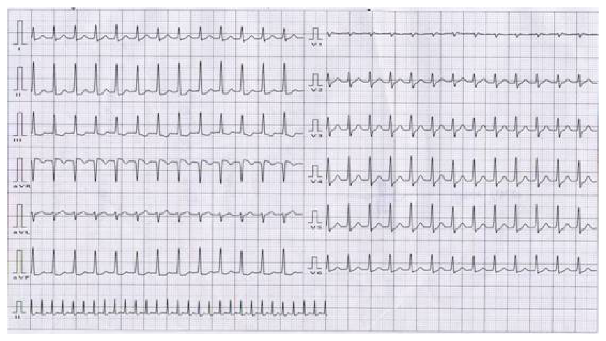
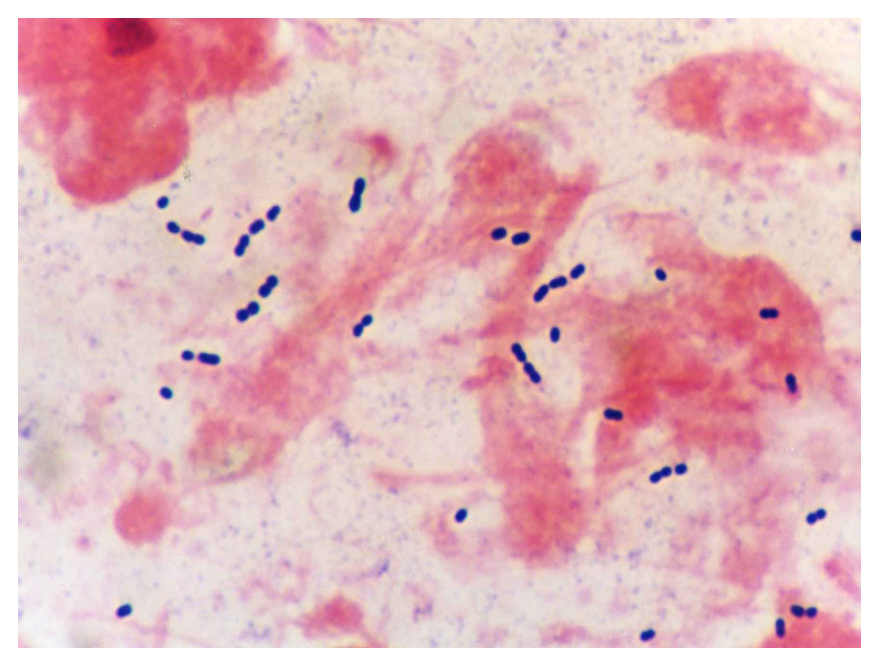
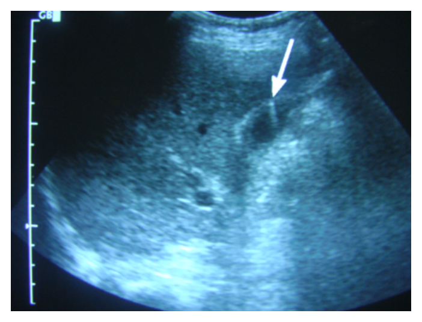

開卷有益 ／
醫師 ／ 醫學（三）（包括內科、家庭醫學科等科目及其相關臨床實例與醫學倫理） ／ 110 年第 2 次110 年第 2 次醫師醫學（三）（包括內科、家庭醫學科等科目及其相關臨床實例與醫學倫理）試題與答案
這一頁是民國 110 年第 2 次醫師醫學（三）（包括內科、家庭醫學科等科目及其相關臨床實例與醫學倫理）的整份歷屆試題，共 80 題，題目與標準答案出自考選部「國家考試試題及測驗式試題答案」開放資料，其中 80 題附有詳解。以下逐題列出題幹、選項與答案；要計時作答或記錄成績，請用線上練習。
考選部原始場次代碼：110080
線上作答這一科 →
全部 80 題
第 1 題
82歲的李奶奶最近有些小感冒，醫師開了一些藥物給她吃。從3天前起，她開始活動力下降，胃口不好，昨天開始發燒，今天早上家人發現無法叫她起床，人不太清醒，於是趕快送到急診。對於本病人之初始評估（initial evaluation），下列那一個項目最不需要？
（A） 詳細的病史查詢，包括含用藥史（B） 腰椎穿刺（C） 身體檢查應包括神經學檢查（D） 血液檢驗包括全血球計數、電解質、肝功能、腎功能檢查答案：（B）
詳解與考點 正解：高齡病人急性意識改變合併發燒時，初始評估首先要找可逆的感染、代謝、藥物與神經學原因；病史、用藥史、完整理學與基本血液檢查都是必要的第一線資料。腰椎穿刺是懷疑中樞神經感染等特定情境才安排的侵入性檢查，並非每位病人的初始必做項目，故選 B。
A：高齡者常因多重用藥、藥物交互作用或腎功能下降而出現譫妄，詳細病史與用藥史可直接改變鑑別診斷，屬初始評估必要內容。
C：意識不清的鑑別診斷包含中風、癲癇後狀態與局灶性神經病灶，神經學檢查可辨認局灶徵象，不能省略。
D：全血球計數可評估感染或貧血，電解質、肝腎功能可找出代謝性腦病與藥物蓄積，均為初始評估的常規項目。
本題考點：急性意識改變（acute altered mental status）的初始評估先以病史、藥物史、理學檢查與基本實驗室檢查找可逆原因；腰椎穿刺（lumbar puncture）須依腦膜炎或腦炎等臨床懷疑選擇性施行。
第 2 題
下列何種狀況不是使用angiotensin-converting enzyme（ACE）inhibitors的禁忌？
（A） 腎功能持續惡化（B） 低血鉀（C） 懷孕（D） 雙側腎動脈狹窄答案：（B）
詳解與考點 正解：題目問「不是禁忌」。ACE inhibitors 會降低醛固酮作用，使血鉀傾向上升；因此（B）低血鉀並非禁忌，反而是治療時需持續追蹤鉀離子的背景狀況，故選 B。
A：腎功能持續惡化時，ACE inhibitor 可能使腎絲球過濾壓進一步下降；需評估是否為藥物相關腎功能惡化，不宜逕自持續使用。
C：ACE inhibitor 具有胎兒腎毒性與其他不良妊娠風險，懷孕時應避免使用。
D：雙側腎動脈狹窄時，腎絲球過濾較依賴 angiotensin II 維持出球小動脈張力；抑制此機轉可造成腎功能明顯惡化，屬重要禁忌。
本題考點：血管張力素轉換酶抑制劑（angiotensin-converting enzyme inhibitors, ACE inhibitors）可造成高血鉀與腎絲球過濾率下降；懷孕與雙側腎動脈狹窄是重要避免使用情境。
第 3 題
有關自體免疫疾病在男性與女性之間，其發生率（incidence）與特色的敘述，下列何者最不適當？
（A） 自體免疫甲狀腺疾病（autoimmune thyroid diseases）、硬皮症（scleroderma）與全身性紅斑狼瘡，都是女性的發生率較高（B） 類風濕性關節炎之女性患者，在懷孕期間該疾病可能比較容易緩解（C） 第一型糖尿病（type 1 diabetes mellitus），女性的發生率較高（D） 僵直性脊椎炎（ankylosing spondylitis），男性的發生率較高答案：（C）
詳解與考點 正解：題目問最不適當的性別流行病學敘述。第一型糖尿病是自體免疫疾病，但其發生率並非一致呈現女性較高，且不同族群的性別差異有限或可偏向男性；不能把多數自體免疫疾病的女性優勢概括套用於它，故選 C。
A：自體免疫甲狀腺疾病、全身性紅斑狼瘡與硬皮症皆具有明顯女性優勢，符合典型流行病學特徵。
B：類風濕性關節炎在懷孕期間常因免疫調節而改善，產後則可能再度活化；這是臨床上看似反直覺但常見的現象。
D：僵直性脊椎炎在男性較常見，且男性較常呈現典型的影像學軸向病變，敘述適當。
本題考點：自體免疫疾病（autoimmune disease）的性別差異不可一概而論；類風濕性關節炎（rheumatoid arthritis）可於懷孕改善；第一型糖尿病（type 1 diabetes mellitus）不具典型的女性高發模式。
第 4 題
一位70歲男性糖尿病患，長期服用glimepiride、metformin、acarbose、pioglitazone控制血糖。接受血管攝影4天後，因意識不清被送至急診。抽動脈血液檢驗結果顯示代謝性酸中毒（pH 6.8、Pco2 39.3 mmHg、HCO3- 6.2mEq/L）、BUN 86 mg/dL、creatinine 6.8 mg/dL、Na+ 135 mEq/L、K+ 6.0 mEq/L、Cl- 90 mEq/L、glucose 131mg/dL、lactic acid 26.6 mmol/L（參考值 0.5～2.2 mmol/L）、ketone body（negative）。其所服用的藥物中，何者與此急性病變最具相關性？
（A） glimepiride（B） metformin（C） acarbose（D） pioglitazone答案：（B）
詳解與考點 正解：血管攝影後急性腎損傷、乳酸 26.6 mmol/L、酮體陰性與重度高陰離子間隙代謝性酸中毒。陰離子間隙＝Na+－（Cl-＋HCO3-）＝135－（90+6.2）＝38.8 mEq/L，明顯升高；乳酸顯著升高而血糖僅 131 mg/dL，支持乳酸性酸中毒。metformin 在腎功能急遽惡化時會蓄積，與 metformin-associated lactic acidosis 最相關，故選 B。
A：glimepiride 是磺醯脲類，主要風險是低血糖；本例血糖不低，且無法解釋顯著乳酸升高與高陰離子間隙酸中毒。
C：acarbose 抑制腸道醣類分解，常見腸胃不適與腹脹，並非此種嚴重乳酸性酸中毒的典型原因。
D：pioglitazone 可造成體液滯留或使心衰竭惡化，但不直接造成乳酸顯著升高；它看似可能與缺氧有關，仍不如（B）腎損傷後藥物蓄積能完整解釋本例。
本題考點：高陰離子間隙代謝性酸中毒（high-anion-gap metabolic acidosis）的計算；乳酸性酸中毒（lactic acidosis）；metformin-associated lactic acidosis 在急性腎損傷時的藥物蓄積風險。
第 5 題
下列有關腹瀉的敘述，何項最適當？
（A） 急性腹瀉中大約有30～40% 是因為傳染原（infectious agents）所造成（B） 輪狀病毒（rotavirus）引起的急性腹瀉，其潛伏期通常小於6小時（C） 腎功能不全病人的腹瀉應該優先使用bismuth subsalicylate治療（D） 長期使用酒精（ethanol）可能造成分泌型腹瀉（secretory-type diarrhea）答案：（D）
詳解與考點 正解：長期酒精使用可損害腸黏膜與胰膽消化功能，並影響腸道分泌與蠕動，能造成持續的水樣分泌型腹瀉（secretory-type diarrhea），故選 D。
A：急性腹瀉多數本身就是感染性原因，將感染原僅說成約 30～40% 低估了感染性急性腹瀉的比重。
B：輪狀病毒感染通常需經過數天潛伏才發病；小於 6 小時的極短潛伏期較應想到預形成毒素所致的食物中毒，而非輪狀病毒。
C：bismuth subsalicylate 含水楊酸鹽成分，腎功能不全者不應優先自行使用；治療腹瀉仍應先評估脫水、感染與病因。
本題考點：分泌型腹瀉（secretory diarrhea）可與酒精及腸道分泌異常有關；急性感染性腹瀉（infectious diarrhea）的潛伏期有助鑑別病原；腎功能不全的用藥安全。
第 6 題
胡先生76歲患有糖尿病、高血壓、慢性腎功能不全及心房顫動於心臟科門診追蹤治療，主訴近兩天頭暈、倦怠及運動後呼吸急促之症狀，在急診測得之心跳呈現不規則，每分鐘約為32下，以下何者門診用藥最不可能和其症狀相關？
（A） 乙型交感神經阻斷劑（β-blocker）（B） 毛地黃（digoxin）（C） 鈣離子通道阻斷劑（calcium channel blocker）（D） 甲型交感神經阻斷劑（α-blocker）答案：（D）
詳解與考點 正解：心房顫動病人心跳僅約 32 下／分鐘，應先想到抑制竇房結或房室結的藥物造成症狀性心搏過緩。α-blocker 主要降低周邊血管阻力，雖可造成姿勢性低血壓與頭暈，通常不會直接使心率降至如此緩慢，最不可能是主因，故選 D。
A：β-blocker 會降低竇房結自律性並減慢房室結傳導，可造成心搏過緩，與本例相符。
B：digoxin 可增加迷走神經作用並抑制房室結傳導；高齡與慢性腎功能不全也會增加藥物蓄積風險，是重要誘答。
C：具心臟作用的 calcium channel blocker，尤其非二氫吡啶類，可抑制房室結傳導並造成心搏過緩，可能與症狀相關。
本題考點：症狀性心搏過緩（symptomatic bradycardia）的藥物原因；β-blocker、digoxin 與非二氫吡啶類鈣離子通道阻斷劑（calcium channel blocker）均可抑制房室結傳導；α-blocker 的主要不良反應是低血壓。
第 7 題
80歲肥胖女性住院病人，因為漸進出現的雙下肢水腫，夜間喘咳和新出現的輕微發燒，在深夜由家人送來急診。醫師在檢查中包含了B型利鈉胜肽（B-type natriuretic peptide, BNP），檢查數值為100 pg/mL，有關該項檢查應用在心衰竭診斷上下列何者正確？
（A） 這一位喘的病人如果出現BNP上升到100 pg/mL，就可以診斷是左心室收縮功能衰竭（B） 在肥胖的心衰竭病人，BNP數值會略低於不肥胖的心衰竭病人（C） 在腎衰竭的病人，如果有心衰竭，BNP也不容易上升（D） 住院中會以反覆系列測量BNP當作心衰竭治療方針的依據答案：（B）
詳解與考點 正解：肥胖病人與 BNP 100 pg/mL。肥胖會使循環中的 B-type natriuretic peptide（BNP）濃度偏低，因此即使有心衰竭，數值也可能不如非肥胖病人明顯上升；判讀時不能單憑此數字排除心衰竭，故選 B。
A：BNP 上升支持心衰竭的可能性，但並非左心室收縮功能衰竭的單一確診檢查；年齡、腎功能、心房顫動與其他疾病都會影響其數值。
C：腎衰竭會降低 BNP 的清除並增加容量負荷，BNP 反而常偏高，敘述方向錯誤。
D：BNP 可作為輔助評估工具，但住院治療方針不能只依反覆系列測量的 BNP 決定，仍要整合症狀、容量狀態與器官灌流。
本題考點：B型利鈉胜肽（B-type natriuretic peptide, BNP）用於心衰竭（heart failure）的輔助診斷；肥胖可降低 BNP、腎功能不全可升高 BNP；生物標記須結合臨床情境判讀。
第 8 題
65歲有冠心症，經乙型阻斷劑（beta blockers）治療且症狀穩定的男性病人，因為咳嗽與黃色痰，接受胸部X光檢查，結果發現兩側肺野正常但呈現紆曲的（tortuous）主動脈，同時有縱膈腔擴大。接下來的電腦斷層檢查顯示在胸部降主動脈有4公分大小的主動脈瘤，沒有剝離狀況。這位病人的主動脈瘤，下列處置何者較佳？
（A） 每年檢查一次胸部電腦斷層，動脈瘤若有每年增大超過1公分，轉介外科手術處理（B） 立刻會診外科手術處理（C） 每年檢查一次胸部電腦斷層，動脈瘤大小達到4.5公分時，轉介外科手術處理（D） 每年檢查一次心臟超音波檢查（transthoracic echocardiography）追蹤動脈瘤，如果增加大於1公分即轉介外科手術處理答案：（A）
詳解與考點 正解：無剝離的 4 cm 胸部降主動脈瘤，選項中以（A）的電腦斷層規律追蹤較合理；（A）以生長速度作為轉介依據，優於固定 4.5 cm 門檻。1 cm／年是題目選項設定的數值，實務的介入與追蹤仍須依現行指引、病因與個案風險判定，故選 A。本題門檻具時效性
B：4 cm 且無剝離、無症狀的降主動脈瘤通常先監測，不因發現即立刻手術。
C：固定以 4.5 cm 作為降主動脈瘤轉介手術的門檻過低，且未納入生長速度這個重要危險訊號。
D：transthoracic echocardiography 對升主動脈與心臟結構較有用，但追蹤胸部降主動脈瘤的尺寸與型態以電腦斷層較合適。
本題考點：胸主動脈瘤（thoracic aortic aneurysm）的影像追蹤；主動脈剝離（aortic dissection）與無併發症動脈瘤的處置差異；動脈瘤生長速度是轉介評估的重要訊號。
第 9 題
下列何者成年人的先天性心臟病於出生時即為cyanotic type？
（A） atrial septal defect（B） ventricular septal defect（C） tetralogy of Fallot（D） patent ductus arteriosus答案：（C）
詳解與考點 正解：tetralogy of Fallot 具有右心室流出道阻塞與室間隔缺損，阻塞嚴重時右向左分流使未氧合血進入體循環，因此可自出生即呈發紺型先天性心臟病（cyanotic congenital heart disease），故選 C。
A：atrial septal defect 通常是左向右分流，出生時一般不會造成發紺。
B：ventricular septal defect 早期也多為左向右分流；除非晚期形成肺高壓與 Eisenmenger syndrome，否則不是出生即發紺。
D：patent ductus arteriosus 多為主動脈至肺動脈的左向右分流，典型表現不是出生即發紺。
本題考點：發紺型先天性心臟病（cyanotic congenital heart disease）源於右向左分流；法洛氏四重症（tetralogy of Fallot）是經典例子；左向右分流病灶初期通常不發紺。
第 10 題
22歲女性因心悸來到急診求診。生命徵象為：意識清楚，體溫37℃，心跳每分鐘160次，血壓110/70毫米汞柱，呼吸每分鐘24次。心電圖如下，以下處置何者最不恰當？

（A） 胸前電擊100J（B） 給與adenosine靜脈注射治療（C） 對病患實施carotid sinus massage（D） 給與verapamil靜脈注射治療答案：（A）
詳解與考點 正解：心電圖為規則的窄QRS心搏過速，心室率約160次／分，且可見持續規則的心房波，符合心房撲動（atrial flutter）合併約2:1房室傳導。病患意識清楚、血壓110/70 mmHg，尚無血流動力學不穩定表現；此時應先以影響房室結傳導的處置協助診斷或控制心室率。立即施行胸前電擊100 J並非此穩定病患的優先處置，故最不恰當的是A。
B：adenosine 可暫時阻斷房室結傳導；雖通常不能終止心房撲動本身，但可使房室阻斷增加、讓撲動波更清楚，並有助與其他規則性上心室頻脈鑑別，故不是最不恰當的選項。
C：carotid sinus massage 是迷走神經刺激法，可暫時減慢房室結傳導。對心房撲動未必能恢復竇性心律，但可協助顯露持續的撲動波；在未具頸動脈病變禁忌的情況下，可作為初步處置之一。
D：verapamil 為非二氫吡啶類鈣離子通道阻斷劑（non-dihydropyridine calcium channel blocker），可減慢房室結傳導並控制心房撲動的心室率；病患血壓穩定時可考慮使用，故非最不恰當。
本題考點：心房撲動（atrial flutter）常呈規則心房活動與2:1房室傳導，心室率常接近150次／分；規則窄QRS心搏過速的房室結處置（AV nodal intervention）包括迷走神經刺激、adenosine與verapamil；同步心律整流（synchronized cardioversion）主要用於血流動力學不穩定或其他處置失敗時。
第 11 題
當高血壓病人同時合併下列狀況時，較不考慮有次發性高血壓？
（A） 抽血檢查發現低血鉀症（B） 易有頭痛、心悸和盜汗（C） 睡覺會打鼾，且白天常想睡（D） 高血脂症答案：（D）
詳解與考點 正解：題目問較不考慮次發性高血壓的線索。高血脂症是常見心血管代謝危險因子，沒有特異性指向可治療的次發性病因，故選 D。
A：低血鉀症合併高血壓應想到醛固酮過多等礦物皮質素相關病因，是典型次發性高血壓線索。
B：頭痛、心悸與盜汗的發作性組合，會使人考慮兒茶酚胺過多的 pheochromocytoma。
C：打鼾與日間嗜睡提示 obstructive sleep apnea，可經交感神經活化造成或加重高血壓。
本題考點：次發性高血壓（secondary hypertension）的線索包括低血鉀、嗜鉻細胞瘤（pheochromocytoma）症狀與阻塞型睡眠呼吸中止（obstructive sleep apnea）；高血脂症本身不特異。
第 12 題
一位55歲男性病人在3個月之內發生數次暈厥（syncope），每次都是坐姿時發生，每次都持續約兩分鐘後自然恢復意識，沒有任何後遺症；初步的身體診察並未發現心血管方面的異常，病人臥姿的血壓是130/80mmHg，沒有姿態性低血壓，以下何項診斷工具最不可能發現導致暈厥的原因？
（A） 肺功能檢查（B） 心臟超音波（C） 24-小時心電圖（Holter monitoring）（D） 心臟電生理檢查（electrophysiological study）答案：（A）
詳解與考點 正解：反覆在坐姿發生、沒有姿態性低血壓的暈厥較須評估心律不整或結構性心臟病。肺功能檢查主要評估通氣與氣流受限，最不可能找出造成此類暈厥的原因，故選 A。
B：心臟超音波可偵測瓣膜病、心肌病與其他結構性心臟病，這些病灶可造成暈厥。
C：24-小時心電圖可捕捉間歇性心律不整；它看似可能因發作不在記錄期間而陰性，但仍是尋找心因性暈厥原因的合適工具。
D：心臟電生理檢查可在選定病人評估傳導系統異常與誘發性心律不整，與心因性暈厥的鑑別相關。
本題考點：暈厥（syncope）的風險分層；坐位或無明顯誘因的暈厥須考慮心因性暈厥（cardiac syncope）；Holter monitoring 與心臟超音波用於心律及結構病因評估。
第 13 題
下列何項因素不會影響正確的血壓測量？
（A） 受檢者的身體姿勢（B） 受檢者的手臂尺寸（C） 使用的儀器種類（D） 受檢者的性別答案：（D）
詳解與考點 正解：正確血壓值會受姿勢、手臂尺寸與儀器方法影響；受檢者性別不是量測技術本身的誤差來源，故選 D。
A：手臂未與心臟同高、缺乏適當支撐或姿勢不正確，都可使血壓讀值失真。
B：袖帶大小要配合手臂圍；袖帶過小常高估、過大可低估血壓，因此手臂尺寸會影響正確量測。
C：不同儀器的校正、測量原理與操作程序不同，未經驗證或使用不當皆可能造成讀值偏差。
本題考點：血壓測量（blood pressure measurement）的標準化；正確袖帶尺寸（cuff size）、姿勢與儀器校正都是讀值準確性的關鍵。
第 14 題
肝硬化病人身體診察常發現的身體表徵，下列何者錯誤？
（A） 胸前有蜘蛛痣（B） 紅掌（C） 男性出現女乳症（D） 下肢靜脈曲張答案：（D）
詳解與考點 正解：肝硬化常因雌激素代謝異常、門脈高壓與肝功能失代償出現特定身體表徵；下肢靜脈曲張並非典型肝硬化理學徵象，故選 D。
A：蜘蛛痣是慢性肝病常見的皮膚血管表徵，可見於胸前與上半身。
B：紅掌與周邊血管擴張相關，是肝硬化常見的體徵之一。
C：男性女乳症可由肝臟對雌激素的代謝與荷爾蒙平衡異常所致，符合肝硬化表現。
本題考點：肝硬化（cirrhosis）的身體檢查；蜘蛛痣（spider angioma）、紅掌（palmar erythema）與男性女乳症（gynecomastia）反映慢性肝病相關的荷爾蒙與血管變化。
第 15 題
有關dumping syndrome，下列何者為最常見的原因？
（A） 細菌過度滋生（bacteria overgrowth）（B） 攝食過多的碳水化合物（carbohydrate）（C） 膽汁排出受阻（D） 切斷迷走神經（vagus nerve）導致消化道蠕動異常答案：（B）
詳解與考點 正解：dumping syndrome 的發作關鍵是高滲透壓食糜快速進入小腸；攝食過多碳水化合物尤其容易造成快速滲透壓移動與腸道荷爾蒙反應，因此在選項中最符合常見誘發因素的是 B。題幹的「原因」在此是指發作的飲食觸發因素；其常見背景仍是胃部手術後胃排空過快。
A：細菌過度滋生較常造成吸收不良、腹脹與腹瀉，不是 dumping syndrome 的典型機轉。
C：膽汁排出受阻可造成脂肪吸收不良，但不會造成高滲食糜快速進入小腸的 dumping syndrome。
D：迷走神經切斷後可改變胃腸蠕動，但單以蠕動異常無法概括本症核心；最直接的發作機轉仍是胃排空過快後的高滲負荷。
本題考點：傾倒症候群（dumping syndrome）常見於胃部手術後；早期傾倒與高滲食糜快速進入小腸有關；高碳水飲食（carbohydrate-rich meal）是常見誘發因素。
第 16 題
62歲肝硬化合併黃疸患者，抽血結果如下：albumin 2.55 g/dL（正常3.5～5.0）；ammonia 98 μg/dL（正常＜70）；bilirubin（total）：21.05 mg/dL（正常0.2～1.0）；PT 16.3 seconds（正常＜11.2）；ALT（GPT）100U/L（正常＜40），下列何者不宜作為本病人肝衰竭之指標？
（A） albumin（B） ammonia（C） bilirubin（D） ALT本題送分，無標準答案
詳解與考點 本題官方公告送分。
第 17 題
為了避免藥物不良反應，結核病人在開始行抗結核藥物治療後，宜定期做下列之血液檢查，除了：
（A） ALT（GPT）（B） bilirubin（C） creatine kinase（CK）（D） 紅白血球計數答案：（C）
詳解與考點 正解：抗結核藥物的常規安全監測著重肝毒性與部分藥物相關的血液學不良反應；creatine kinase（CK）不是開始抗結核治療後例行追蹤的標準血液檢查，故選 C。
A：ALT（GPT）可偵測抗結核藥物相關肝細胞損傷，尤其在有症狀或肝病風險者更重要。
B：bilirubin 上升可提示較嚴重的肝功能異常或膽汁鬱積，和肝功能監測相關。
D：紅白血球計數可協助偵測特定藥物造成的血液學異常，並提供治療前後比較資料。
本題考點：抗結核治療（antituberculosis therapy）的藥物不良反應監測；肝毒性（hepatotoxicity）以症狀及肝功能檢查評估；creatine kinase 不屬例行監測項目。
第 18 題
下列有關原發性膽管性肝硬化（primary biliary cirrhosis）的敘述，何者錯誤？
（A） 多數病人抗粒線體抗體（antimitochondrial antibody）為陽性（B） 可發生xanthelasma及xanthomata（C） 以ursodeoxycholic acid治療可治癒此疾病（D） 血清免疫球蛋白（immunoglobulin）上升主要為IgM答案：（C）
詳解與考點 正解：原發性膽管性肝硬化現稱原發性膽管炎（primary biliary cholangitis），ursodeoxycholic acid 可改善膽汁鬱積、生化指標與預後，但不能保證治癒疾病，因此（C）錯誤，故選 C。
A：多數病人可檢出 antimitochondrial antibody，是本病重要的血清學線索。
B：慢性膽汁鬱積可造成脂質代謝異常，因而出現 xanthelasma 或 xanthomata，敘述正確。
D：本病常見血清 IgM 上升，符合其免疫學特徵。
本題考點：原發性膽管炎（primary biliary cholangitis, PBC）的抗粒線體抗體（antimitochondrial antibody）與 IgM 上升；ursodeoxycholic acid 是治療藥物但非治癒性療法；慢性膽汁鬱積可造成黃斑瘤（xanthelasma）。
第 19 題
30歲女性疲倦、關節痛及肝指數異常至胃腸科門診就診。病人無搔癢也無藥物濫用過去史。抽血檢查發現AST/ALT：380/410 U/L（reference value：≦40/40）、HBsAg陰性反應、anti-HCV Ab陰性反應、anti-nuclearAb（ANA）陽性反應。則下列敘述，何者正確？
（A） antibodies to liver-kidney microsomes（anti-LKM）也可能呈現陽性反應（B） 此種病人併發肝細胞癌的機會比病毒性肝炎相關肝硬化高（C） 抗平滑肌抗體（anti-smooth-muscle antibodies, ASMA）應呈現陰性（D） 肝穿刺檢查常發現慢性非化膿性破壞性膽管炎（chronic nonsuppurative destructive cholangitis）答案：（A）
詳解與考點 正解：年輕女性、關節痛、明顯肝細胞型肝指數上升、病毒性肝炎標記陰性及 ANA 陽性，最符合自體免疫性肝炎（autoimmune hepatitis）。anti-LKM 可見於其特定血清學型別，因此（A）可能陽性，故選 A。
B：自體免疫性肝炎若進展為肝硬化確有肝癌風險，但不能據此說其風險高於病毒性肝炎相關肝硬化，敘述不正確。
C：anti-smooth-muscle antibodies 是自體免疫性肝炎常見抗體，應為陽性而非陰性；它看似與 ANA 同屬自體抗體而易被誤認為互斥，實際上兩者可並存。
D：chronic nonsuppurative destructive cholangitis 是原發性膽管炎的典型膽管病理，不是自體免疫性肝炎最典型的肝組織表現。
本題考點：自體免疫性肝炎（autoimmune hepatitis）的 ANA、抗平滑肌抗體（anti-smooth-muscle antibodies, ASMA）與 anti-LKM；原發性膽管炎（primary biliary cholangitis）的非化膿性破壞性膽管炎病理表現。
第 20 題
有關慢性B型肝炎的敘述，下列何者錯誤？
（A） 病毒量的高低與肝癌發生的風險成正比，因此高病毒量患者都應該要積極接受抗病毒藥物治療（B） 慢性B型肝炎可以有肝外症狀的表現，較常見的是arthralgia及arthritis（C） 肝臟纖維化的程度，美國常使用histologic activity index（HAI）分為0～6分，歐洲常使用METAVIR系統分為0～4分（D） 肝臟纖維化的判斷也可以非侵襲性方式得知，如抽血檢測纖維的生物標誌（serum biomarkers of fibrosis）及利用影像學方式檢測肝臟的彈性（liver elasticity）答案：（A）
詳解與考點 正解：「高病毒量患者都應該」接受抗病毒治療。慢性 B 型肝炎的治療決策除病毒量外，還須整合 ALT、肝臟發炎與纖維化程度、肝硬化及個別宿主狀態；高病毒量本身會提高肝癌風險，但不能推論所有高病毒量者一律立即治療，因此（A）錯誤，故選 A。
B：慢性 B 型肝炎可有肝外免疫複合體相關表現，arthralgia 與 arthritis 是可見的臨床症狀。
C：Ishak system（modified HAI）將肝臟纖維化分為 0～6 期，METAVIR 則以 F0～F4 分期；這些纖維化分期不可與壞死發炎活動度混為一談，故選項非本題錯誤核心。
D：血清纖維化生物標記與肝臟彈性影像檢查皆可用於非侵襲性評估肝纖維化，能減少部分病人重複肝切片的需求。
本題考點：慢性 B 型肝炎（chronic hepatitis B）的抗病毒治療須整合病毒量、肝臟發炎與纖維化；肝癌（hepatocellular carcinoma）風險與病毒量相關但不等於單一治療指徵；非侵襲性肝纖維化評估（noninvasive fibrosis assessment）。
第 21 題
以下關於潰瘍性大腸炎（ulcerative colitis）與克隆氏症（Crohn's disease）的描述，何者正確？
（A） 潰瘍性大腸炎較容易有skip lesion（B） 克隆氏症比較不容易有全身性症狀（C） 克隆氏症比較容易併發腸道狹窄（D） 潰瘍性大腸炎比較不會有黏液血便答案：（C）
詳解與考點 正解：兩種發炎性腸病的病灶型態與腸道併發症。克隆氏症的發炎可穿透腸壁全層，反覆發炎與纖維化後容易形成腸腔狹窄，亦可造成瘻管，故選 C。
A：skip lesion 是克隆氏症的典型特徵；潰瘍性大腸炎多由直腸開始連續向近端延伸，故此敘述把疾病特徵對調。
B：克隆氏症可有發燒、體重減輕等全身性發炎表現，不能說較不容易有全身性症狀。
D：黏液血便是潰瘍性大腸炎常見的結腸黏膜發炎表現，故「比較不會」不正確。
本題考點：發炎性腸病（inflammatory bowel disease, IBD）——克隆氏症為跳躍性、全層性發炎，易狹窄與瘻管；潰瘍性大腸炎為連續性結腸黏膜發炎，常見血便。
第 22 題
關於急性胰臟炎的嚴重度評估，可包括三大類，如risk factors for severity、markers of severity at admission orwithin 24 hours及markers of severity during hospitalization，下列敘述何者正確？
（A） 與嚴重程度相關的因子（risk factors for severity）包括有年齡＞60 歲、BMI＜30 kg/m2、具有comorbiddiseases（B） markers of severity at admission or within 24 hours之中包括有hemodilution（hematocrit＜40%）（C） markers of severity at admission or within 24 hours之中包括有core temperature＜36度或＞38度、heart rate＞90beats/min（D） markers of severity during hospitalization包括有elevated C-reactive protein（CRP）及elevated blood sugar答案：（C）
詳解與考點 正解：急性胰臟炎入院或最初 24 小時的嚴重度警訊。低體溫或發燒與心搏過速反映全身性發炎反應（systemic inflammatory response），可作為早期重症風險的評估線索，故選 C。
A：高齡與共病是嚴重度風險因子，但肥胖是風險之一，應是 BMI 偏高而非 BMI<30 kg/m2；因此整組敘述錯在 BMI 方向。
B：早期血液濃縮而非 hemodilution 較提示血管內體液不足與較重病程；hematocrit 下降不能作為此處所述的典型早期警訊。
D：CRP 上升可隨住院病程協助評估發炎嚴重度，但高血糖較屬入院初期可觀察的代謝指標；兩者被歸為同一住院期間指標的說法不恰當。
本題考點：急性胰臟炎嚴重度評估（severity assessment of acute pancreatitis）——需整合宿主風險因子、入院早期的生命徵象與血液濃縮，以及住院中持續出現的器官衰竭或發炎指標。
第 23 題
慢性胃炎（chronic gastritis）為上消化道內視鏡檢查下常見的現象，下列敘述何者正確？
（A） 慢性胃炎可根據其範圍分為type A: body-predominant gastritis及type B: antral-predominant gastritis（B） body-predominant gastritis主要導因為Helicobacter pylori infection，而antral-predominant gastritis主要導因為autoimmune related problem（C） autoimmune gastritis的病程會依循multifocal atrophic gastritis、gastric atrophy、metaplasia，最後可能導致gastric adenocarcinoma（D） antral-predominant gastritis與pernicious anemia有關連，病人血液中會有antibodies against parietal cells及intrinsic factor答案：（A）
詳解與考點 正解：慢性胃炎依解剖分布與病因的分類。body-predominant gastritis 主要累及胃體與胃底，常對應自體免疫性胃炎；antral-predominant gastritis 以胃竇為主，常與幽門螺旋桿菌感染相關，故可依範圍稱為 type A 與 type B，選 A。
B：此選項把兩類胃炎的主要病因對調；幽門螺旋桿菌較對應胃竇優勢型，自體免疫問題較對應胃體優勢型。
C：multifocal atrophic gastritis 是常與幽門螺旋桿菌相關的萎縮與化生路徑；自體免疫胃炎的主要病灶與病程描述不能直接如此等同。
D：惡性貧血、壁細胞抗體與內在因子抗體是自體免疫性胃體優勢型胃炎的線索，不是胃竇優勢型胃炎。
本題考點：慢性胃炎（chronic gastritis）——胃體優勢型常與自體免疫（autoimmune gastritis）及惡性貧血相關；胃竇優勢型常與幽門螺旋桿菌（Helicobacter pylori）相關。
第 24 題
18歲男性病人，10天前喉嚨痛，當時血液肌酸酐1.0 mg/dL。最近4天有發燒、高血壓、少尿、水腫、運動性呼吸困難。血液肌酸酐1.6 mg/dL，明顯的補體下降，尿液紅血球25～40/HPF，紅血球圓柱體（RBC cast）+，蛋白質1+。最不可能的診斷是：
（A） 鏈球菌感染後之腎絲球腎炎（poststreptococcal glomerulonephritis）（B） 韋氏肉芽腫（Wegener’s granulomatosis）（C） 紅斑性狼瘡腎炎（lupus nephritis）（D） 心內膜炎（infective endocarditis）答案：（B）
詳解與考點 正解：急性腎炎症候群合併明顯低補體。血尿、RBC cast、少尿、水腫與高血壓顯示腎絲球腎炎；發病在咽喉痛後與低補體尤其支持免疫複合體相關病因。韋氏肉芽腫現稱 granulomatosis with polyangiitis，典型為 pauci-immune 腎炎，補體通常正常，因此最不可能，選 B。
A：鏈球菌感染後腎絲球腎炎可在感染後出現腎炎症候群與補體下降，符合本題。
C：狼瘡腎炎可形成免疫複合體腎炎並消耗補體，可解釋低補體與尿沉渣異常。
D：感染性心內膜炎可造成免疫複合體相關腎絲球腎炎，亦可能出現低補體，故不能排除。
本題考點：急性腎炎症候群（acute nephritic syndrome）——RBC cast 指向腎絲球出血；低補體偏向免疫複合體疾病，如感染後腎炎、狼瘡腎炎與感染性心內膜炎相關腎炎；ANCA 相關血管炎多為正常補體。
第 25 題
巴特氏症候群（Bartter’s syndrome）的腎小管上皮細胞功能失調出現在：
（A） 近端腎小管（B） 亨利氏環粗上升支（C） 遠端腎小管（D） 集尿小管答案：（B）
詳解與考點 正解：Bartter’s syndrome 模擬哪一段腎小管的利尿劑作用。Bartter’s syndrome 的離子運輸缺陷主要在亨利氏環粗上升支，影響 Na-K-2Cl 共轉運等鹽分再吸收機制，造成鹽分流失、腎素與醛固酮上升，故選 B。
A：近端腎小管缺陷較會造成葡萄糖、磷酸鹽與胺基酸等多項近端重吸收異常，並非 Bartter’s syndrome 的典型部位。
C：遠端腎小管缺陷較類似 Gitelman syndrome 的作用部位與表現，容易與 Bartter’s syndrome 混淆但位置不同。
D：集尿小管主要受醛固酮與 ADH 調節，並非本症候群的主要病灶。
本題考點：Bartter’s syndrome——病灶在亨利氏環粗上升支（thick ascending limb），生理效果類似 loop diuretic；Gitelman syndrome 則主要影響遠端曲小管（distal convoluted tubule）。
第 26 題
一位50歲無糖尿病男性，生化檢驗結果呈現血清肌酸酐3.5 mg/dL，尿素氮40.1 mg/dL，估算之腎絲球過濾率20 mL/min，白蛋白4.0 g/dL，血鉀4.1 mmol/L，血鈣2.05 mmol/L，血磷4.5 mg/dL，25(OH) vitamin D 10ng/mL，intact parathyroid hormone 255 pg/mL。下列治療何者最優先？
（A） cinacalcet（B） cholecalciferol（C） calcitriol（D） ergocalcitriol答案：（C）
詳解與考點 正解：官方答案為 C。本題以 eGFR 20 mL/min、低血鈣、偏高血磷及 intact PTH 255 pg/mL，將 calcitriol 視為處理慢性腎臟病礦物質與骨異常（CKD-MBD）次發性副甲狀腺亢進的最佳選項。惟現行作法須先評估並矯正高血磷、低血鈣與 25(OH) vitamin D 缺乏；calcitriol 並非所有非透析 CKD G4 病人的當然首選
A：cinacalcet 可降低 PTH，但多用於特定持續性副甲狀腺亢進情境；不宜只依本題單次 PTH 值逕列為優先。
B：cholecalciferol 可補充 25(OH) vitamin D；本例 25(OH) vitamin D 僅 10 ng/mL，其缺乏本身仍須評估與矯正，不能因腎功能不全而完全忽略。
D：ergocalcitriol 並非此臨床情境中用以處理 CKD 次發性副甲狀腺亢進的標準活性維生素 D 名稱。
本題考點：慢性腎臟病礦物質與骨異常（CKD-mineral and bone disorder, CKD-MBD）——須綜合血磷、血鈣、25(OH) vitamin D 與 PTH 的趨勢；活性維生素 D（active vitamin D）使用需依病情個別判斷。
第 27 題
下列4類無症狀性大腸桿菌菌尿症（＞105colony forming units/mL）病人，何者最需要接受抗生素治療？
（A） 24歲性活躍女性（B） 30歲懷孕12週女性（C） 50歲糖尿病女性（D） 75歲置有長期導尿管男性答案：（B）
詳解與考點 正解：「無症狀性」菌尿，治療例外主要是懷孕與即將接受會造成尿路黏膜出血的泌尿道處置。懷孕期間的無症狀性菌尿會增加腎盂腎炎及不良妊娠結果風險，故 30 歲、懷孕 12 週女性最需要抗生素治療，選 B。
A：健康、非懷孕的性活躍女性即使菌尿達定義，通常不因無症狀菌尿而治療。
C：糖尿病不是無症狀性菌尿的常規治療適應症；看似風險較高，卻沒有證據支持例行抗生素可帶來淨益。
D：長期導尿管常有菌尿，無症狀時治療難以根除且會增加抗藥性，通常不建議。
本題考點：無症狀性菌尿（asymptomatic bacteriuria）——懷孕是重要治療適應症；非懷孕女性、糖尿病與長期導尿但無症狀者通常不需抗生素。
第 28 題
王先生為54歲男性，因IgA nephropathy進展至末期腎臟病，無其他過去病史。若要為王先生建議腎臟替代療法，下列何種療法的長期（大於1年）存活率及生活品質最佳？
（A） 血液透析（hemodialysis）（B） 腹膜透析（peritoneal dialysis）（C） 連續性靜脈對靜脈血液過濾術（continuous venovenous hemofiltration）（D） 腎臟移植（renal transplantation）答案：（D）
詳解與考點 正解：無重大共病的末期腎臟病患者，詢問長期存活率及生活品質的最佳腎臟替代療法。若可接受移植且有合適器官來源，腎臟移植能提供較接近原有腎功能的腎臟替代，長期存活與生活品質通常優於透析，故選 D。
A：血液透析是成熟的腎臟替代療法，但需規律接受治療且長期整體結果通常不及成功移植。
B：腹膜透析可在居家執行、初期生活彈性佳，但就長期存活與生活品質的整體比較，通常不是本題所問的最佳選項。
C：連續性靜脈對靜脈血液過濾術主要用於重症急性腎損傷患者的連續性腎臟替代，不是穩定末期腎病的長期常規療法。
本題考點：腎臟替代療法（renal replacement therapy）——長期選項包括血液透析、腹膜透析與腎臟移植；對適合的末期腎臟病患者，腎臟移植（renal transplantation）通常有最佳長期結果。
第 29 題
一位56歲的高血壓患者，因血壓控制的需要，已服用利尿劑一段時間。某天晚上十點多鐘，患者突覺左側大腳趾、足踝關節及腳背紅腫劇痛。送急診後，左腳X光檢查正常，ESR 28 mm/1h，CRP 11.4 mg/dL（正常<0.8mg/dL），WBC 9650/μL。下列何種檢查對診斷最有幫助？
（A） septic work-up（B） joint fluid examination（C） anticardiolipin antibodies（D） serum uric acid level答案：（B）
詳解與考點 正解：使用利尿劑後突發第一蹠趾關節與足踝紅腫劇痛，強烈提示急性痛風，但急性單關節炎仍必須排除感染。關節液檢查可直接找單鈉尿酸鹽結晶，也可做細胞計數、革蘭氏染色與培養以排除化膿性關節炎，因此對診斷最有幫助，選 B。
A：septic work-up 可在懷疑全身感染時輔助，但不能取代受影響關節的關節液分析。
C：anticardiolipin antibodies 是評估抗磷脂症候群的檢驗，不能解釋典型急性單關節炎。
D：血清尿酸在急性痛風發作時可正常，且高尿酸血症本身不能確診痛風；它看似方便，卻不如關節液中的結晶具有診斷力。
本題考點：急性單關節炎（acute monoarthritis）——疑似痛風須以關節液（synovial fluid）晶體分析確認，並同步排除 septic arthritis；利尿劑可增加高尿酸與痛風風險。
第 30 題
28歲女性近2年來，下肢偶會有隆起性的紫斑，並有3次急性氣喘發作。經服用類固醇30 mg/day 3天之後，氣喘及紫斑均很快消失。抽血檢查發現WBC 9600/μL，platelet count 287×103/μL，但eosinophil高達27%。血清學檢查發現：ANA 1：80，ESR 17 mm/1h，CRP 0.81 mg/dL。下列何種檢查陽性對疾病的診斷最有幫助？
（A） antineutrophil cytoplasmic antibodies（B） IgE（C） IgG4（D） sputum smear答案：（A）
詳解與考點 正解：成人反覆氣喘、隆起性紫斑與顯著嗜酸性球增多，組合指向 eosinophilic granulomatosis with polyangiitis（EGPA）。ANCA 陽性可提供小血管炎的支持證據，對此臨床診斷最有幫助，故選 A。
B：IgE 可在過敏性疾病與氣喘升高，但缺乏特異性，不能區分單純過敏與 EGPA。
C：IgG4 相關疾病可影響多器官，卻不能優先解釋氣喘、嗜酸性球增多與可觸及紫斑的血管炎組合。
D：痰液抹片用於尋找特定呼吸道病原或細胞成分，不能作為本題系統性血管炎的關鍵診斷檢驗。
本題考點：嗜酸性肉芽腫多血管炎（eosinophilic granulomatosis with polyangiitis, EGPA）——典型線索為氣喘、嗜酸性球增多與血管炎表現；ANCA 可作為支持性血清學證據。
第 31 題
36歲的女性，自覺有微燒並發現上眼瞼及臉頰部有紅疹。近2週來，早上醒來時身體無力，必須側身以雙手扶持起床。血液常規檢查正常，血清學檢查ANA 1：40 speckled，C3 116 mg/dL，C4 9.8 mg/dL，ESR 31mm/1h，CRP 1.1 mg/dL。最有可能的診斷為下列何者？
（A） dermatomyositis（B） systemic lupus erythematosus（C） eczema（D） photosensitivity答案：（A）
詳解與考點 正解：上眼瞼與臉頰紅疹合併近端肌無力，甚至需用雙手支撐才能起床。這是皮肌炎的皮膚表現合併發炎性肌病，最符合 dermatomyositis，故選 A。
B：systemic lupus erythematosus 可有臉部紅疹與 ANA 陽性，但不能以此特異地解釋明顯對稱性近端肌無力；ANA 低滴度本身也不具診斷性。
C：eczema 可造成皮疹，卻不會造成進展性的近端肌無力，無法統一解釋病情。
D：photosensitivity 是一項症狀或現象，不是能整合本題皮疹與肌無力的完整診斷。
本題考點：皮肌炎（dermatomyositis）——發炎性肌病（inflammatory myopathy）以對稱性近端肌無力為主，合併特徵性皮膚病灶；鑑別時須注意 SLE 的皮疹不能單獨說明肌無力。
第 32 題
21歲男性，因為肺炎（pneumonia）住院診療。痰液培養顯示為流行性感冒嗜血桿菌（Haemophilusinfluenzae），經詢問病史，病人自15歲起便曾因肺炎於不同醫院住院多次，並一直有慢性鼻竇炎（chronicsinusitis）與支氣管擴張（bronchiectasis）問題。病人本次血液常規WBC = 9,700 /μL，Hb 14.4 g/dL，plateletcount = 198 k/μL，neutrophil = 74.2%，lymphocyte = 17.7%，monocytes = 6.6%，eosinophil = 1.1%，basophil =0.4%。後續下列何項檢查對評估病人的免疫功能缺損最為適當？
（A） CD4與CD8淋巴細胞計數（B） 血中免疫球蛋白G（serum IgG）（C） 血中免疫球蛋白E（serum IgE）（D） 血中第三補體與第四補體（serum C3 and C4）答案：（B）
詳解與考點 正解：青少年後反覆由呼吸道常見莢膜菌造成肺炎，並有慢性鼻竇炎與支氣管擴張。此型態優先懷疑體液免疫缺損，應檢查血中 IgG，以評估常見變異型免疫缺乏症等抗體生成障礙，故選 B。
A：CD4 與 CD8 計數主要評估 T 細胞缺陷；本題反覆細菌性鼻肺感染更符合抗體缺損。
C：IgE 有助於特定過敏或高 IgE 症候群的判讀，但不能作為此病人最適當的初始體液免疫評估。
D：C3 與 C4 適合懷疑補體缺陷或免疫複合體疾病時評估，但本題病原與感染部位更支持免疫球蛋白不足。
本題考點：體液免疫缺損（humoral immunodeficiency）——反覆鼻竇肺部細菌感染、支氣管擴張與莢膜菌感染提示抗體缺陷；serum IgG 是重要初步評估。
第 33 題
下列何項檢驗對確診全身性紅斑狼瘡（systemic lupus erythematosus）幫助最小？
（A） 抗核抗體（anti-nuclear antibodies）（B） 第四補體（C4）（C） 全血球計數與血球分類（complete blood count and differential count）（D） 抗SSA抗體（anti-SSA antibodies）答案：（D）
詳解與考點 正解：比較各檢驗對 SLE 確診的幫助。抗 SSA 抗體可見於部分 SLE 患者，但也常見於 Sjögren syndrome，且不是 SLE 分類或初步診斷最核心的檢驗，因此幫助最小，選 D。
A：ANA 對 SLE 高度敏感，是懷疑 SLE 時最重要的篩檢性血清學檢驗；雖不具高度特異性，仍比抗 SSA 更具初步診斷價值。
B：C4 下降可反映補體消耗與疾病活動，能支持免疫複合體相關的 SLE 表現。
C：全血球計數可發現白血球低下、血小板低下或溶血性貧血等血液學表現，對整體診斷評估具幫助。
本題考點：全身性紅斑狼瘡（systemic lupus erythematosus, SLE）檢驗——ANA 敏感但不特異；補體與血球計數反映常見器官系統表現；anti-SSA 並非 SLE 專屬。
第 34 題
一位40歲女性，有癌症家族史，來諮詢她發生乳癌的風險。她有兩個姑媽在60歲左右時診斷乳癌，爸爸有淋巴癌，堂兄有結腸癌，她的姑媽BRCA-1和BRCA-2基因檢測的結果為陰性。下列敘述何者正確？
（A） 相關的基因遺傳非來自父系（B） 她是發生癌症的高危險群，應該每年接受正子攝影（positron emission tomography [PET] scans）檢查（C） 應考慮BRCA-1及BRCA-2以外的基因檢測（D） 她應開始服用芳香環轉化酶抑制劑（aromatase inhibitor）以降低風險答案：（C）
詳解與考點 正解：家族中有多位乳癌及其他癌症，但已知受檢親屬的 BRCA1/BRCA2 為陰性。陰性結果不能排除其他遺傳性癌症基因或家族性風險，應由遺傳諮詢依家系考慮多基因檢測，故選 C。
A：BRCA 相關遺傳可由父系或母系傳遞，不能因癌症出現在姑媽就排除父系。
B：PET 不適合作為無症狀高風險者的年度乳癌篩檢工具；它看似檢查全面，卻有輻射、偽陽性與不足以作為常規篩檢的問題。
D：芳香環轉化酶抑制劑的風險降低策略須依絕經狀態與個別風險審慎評估，不能只憑這些家族史直接開始服用。
本題考點：遺傳性乳癌風險評估（hereditary breast cancer risk assessment）——BRCA1/BRCA2 陰性不等於沒有遺傳風險；家族史可提示考慮多基因檢測（multigene panel testing）與遺傳諮詢。
第 35 題
上皮生長激素受體（epidermal growth factor receptor, EGFR）的標靶治療（包括EGFR small-molecule inhibitor,anti-EGFR antibody, anti-HER2 antibody）不被應用在下列何種癌症上？
（A） 結腸癌（colon cancer）（B） 肺癌（lung cancer）（C） 腸平滑肌惡性肉瘤（intestinal leiomyosarcoma）（D） 乳癌（breast cancer）答案：（C）
詳解與考點 正解：列舉 EGFR small-molecule inhibitor、anti-EGFR antibody 與 anti-HER2 antibody 的適應癌種。結腸癌、肺癌與乳癌分別有依生物標記選擇的 EGFR 或 HER2 路徑標靶治療；腸平滑肌惡性肉瘤的常規標靶策略並非這些 EGFR 家族治療，故選 C。
A：結腸癌在適當分子條件下可使用 anti-EGFR antibody，故不是答案。
B：部分肺癌帶有 EGFR 驅動突變時，EGFR small-molecule inhibitor 是重要治療，故非答案。
D：乳癌的 HER2 陽性亞型可使用 anti-HER2 antibody；名稱雖提 HER2，HER2 屬 EGFR family，故此選項看似不同路徑，實際仍在題幹範圍。
本題考點：EGFR family 標靶治療（EGFR family targeted therapy）——包括肺癌的 EGFR inhibitor、結腸癌的 anti-EGFR antibody 與 HER2 陽性乳癌的 anti-HER2 therapy；治療須依腫瘤種類與生物標記。
第 36 題
標靶治療藥物 imatinib 是何種蛋白的抑制劑？
（A） Bcr-Abl（B） PML-RARα（C） NF-κB（D） EGFRα答案：（A）
詳解與考點 正解：imatinib 的經典分子標靶。Bcr-Abl 融合蛋白具有持續活化的 tyrosine kinase 活性，是 chronic myeloid leukemia 的核心致病驅動；imatinib 可抑制其 kinase，故選 A。
B：PML-RARα 是急性前骨髓性白血病的融合蛋白，治療概念與誘導分化相關，不是 imatinib 的主要標靶。
C：NF-κB 是廣泛參與發炎與細胞存活的轉錄調控路徑，並非 imatinib 的經典直接標靶。
D：EGFRα 不是 imatinib 所針對的主要蛋白；EGFR 驅動腫瘤通常使用其他特異性 EGFR 抑制策略。
本題考點：Bcr-Abl（Bcr-Abl fusion tyrosine kinase）——由 Philadelphia chromosome 形成，是慢性骨髓性白血病（chronic myeloid leukemia, CML）的標靶；imatinib 是 tyrosine kinase inhibitor。
第 37 題
下列有關lupus anticoagulant陽性病患的描述，何者錯誤？
（A） 病人通常沒有出血傾向（B） activated partial thromboplastin time（aPTT）經常延長，但在混合正常血漿的試驗（mixing test）中，會變為正常（C） 不是systemic lupus erythematosus（SLE）的患者，也可能出現lupus anticoagulant（D） VDRL梅毒檢驗可能呈陽性反應答案：（B）
詳解與考點 正解：lupus anticoagulant 為「抑制物」而非凝血因子缺乏。其可使磷脂依賴性凝血試驗如 aPTT 延長；將病人血漿與正常血漿混合後，抑制物仍存在，所以 aPTT 通常不會校正為正常。故錯誤敘述為 B。
A：lupus anticoagulant 雖使體外 aPTT 延長，臨床上通常不是出血傾向，反而與血栓風險相關，敘述正確。
C：lupus anticoagulant 可獨立於 SLE 出現，敘述正確。
D：抗磷脂抗體可與非特異性梅毒血清試驗產生偽陽性反應，故 VDRL 可能陽性，敘述正確。
本題考點：lupus anticoagulant——屬抗磷脂抗體（antiphospholipid antibody），使 aPTT 延長但 mixing test 不校正；體內臨床表現偏血栓而非出血，並可造成 VDRL 偽陽性。
第 38 題
一位30歲懷孕婦女，主訴其姊姊在生產時曾大量出血，擔心自己也會有類似的情形，因此來求診。詢問過去病史，除月經量較多外，無其他明顯出血情形，且未服用任何藥物或補藥。身體檢查發現，身上無明顯紫斑或其他異常情況，關節正常。血液檢查結果如下：血紅素11.5 g/dL，白血球5,200/μL，分類正常，血小板275,000/μL，bleeding time 14分（正常值：小於7.1分），prothrombin time（PT）12秒（正常值：小於12.5秒），activated partial prothrombin time （aPTT）44秒（正常值：小於36秒）。這位婦女最可能得了什麼病？
（A） hemophilia A（B） von Willebrand disease（C） chronic hepatitis（D） uremia答案：（B）
詳解與考點 正解：月經量多、家族生產出血史、出血時間延長且 aPTT 延長，但血小板數和 PT 正常。von Willebrand disease 會造成血小板黏附功能不佳而延長出血時間，也因 von Willebrand factor 穩定 factor VIII 而可能延長 aPTT，最符合本題，故選 B。
A：hemophilia A 多為 X 連鎖疾病，女性較少以此型態發病，且主要是深部組織與關節出血；出血時間通常正常。
C：chronic hepatitis 可影響多種凝血因子合成並延長 PT，與本題正常 PT 不符。
D：uremia 可造成血小板功能異常與出血時間延長，但本題無腎衰竭線索，也不能典型解釋 aPTT 延長。
本題考點：von Willebrand disease（vWD）——von Willebrand factor 參與血小板黏附並穩定 factor VIII，因此可見黏膜出血、出血時間延長及 aPTT 延長，而 PT 正常。
第 39 題
下列關於原發性肺癌的敘述，何者錯誤？
（A） 肺癌局部擴散會造成膈神經（phrenic nerve）麻痺，導致Horner氏症候群（Horner's syndrome）（B） Horner氏症候群症狀包括眼球陷沒（enophthalmos）、眼皮下垂（ptosis）、瞳孔縮小（miosis）、無汗（anhydrosis）（C） 肺癌長在肺尖局部擴散會侵犯第8頸神經、第1胸神經、第2胸神經，導致Pancoast症候群（Pancoastsyndrome）（D） Pancoast症候群症狀包括肩痛並輻射至手臂尺骨（ulnar）側答案：（A）
詳解與考點 正解：肺癌局部侵犯所致神經症候群的對應。膈神經麻痺主要造成同側橫膈上升與呼吸功能影響；Horner syndrome 則因交感神經路徑受侵犯所致。把膈神經麻痺說成導致 Horner syndrome 是錯誤的，故選 A。
B：Horner syndrome 的典型組合包括 ptosis、miosis、無汗與可見的眼球凹陷外觀，敘述正確。
C：肺尖腫瘤可侵犯下頸部與上胸部神經根或臂神經叢，形成 Pancoast syndrome，敘述方向正確。
D：Pancoast syndrome 常見肩痛向手臂尺側放射，因下臂神經叢受影響，敘述正確。
本題考點：肺癌局部侵犯（local invasion of lung cancer）——膈神經受侵造成橫膈麻痺；交感神經受侵造成 Horner syndrome；肺尖腫瘤侵犯臂神經叢形成 Pancoast syndrome。
第 40 題
病患初診斷膀胱癌時的期別，最常見的是：
（A） 表淺（superficial）型（B） 平滑肌侵犯（muscle-invasive）型（C） 轉移（metastatic）型：轉移至肺部（D） 轉移（metastatic）型：轉移至肝臟答案：（A）
詳解與考點 正解：「初診斷」的膀胱癌期別分布。多數病人在初次診斷時仍局限於黏膜或黏膜下層，屬非肌肉侵犯、傳統上稱表淺型膀胱癌，因此最常見的是 A。
B：平滑肌侵犯型雖較具侵襲性並需積極分期與治療，但不是初診時最常見的型態。
C：肺部轉移代表遠端轉移期，初診時比例遠低於局限性表淺型。
D：肝臟轉移同為遠端轉移表現，並非膀胱癌初診最常見期別。
本題考點：膀胱癌分期（bladder cancer staging）——初診多為非肌肉侵犯膀胱癌（non-muscle-invasive bladder cancer, NMIBC），傳統稱 superficial type；肌肉侵犯與遠端轉移比例較低。
第 41 題
對缺鐵性貧血的敘述，下列何者錯誤？
（A） 常見於生理期經血過多的女性（B） 慢性痔瘡出血是男性缺鐵性貧血的常見原因之一（C） 為了減輕體重而接受胃腸繞道手術的人，可能併發缺鐵性貧血（D） 有遺傳性海洋性貧血的人容易有缺鐵性貧血答案：（D）
詳解與考點 正解：官方答案為 D。海洋性貧血（thalassemia）是珠蛋白鏈合成異常，造成小球性貧血；其病因不是鐵缺乏，且反覆輸血者反而可能鐵負荷過多，故（D）錯誤。惟（B）把痔瘡出血稱為男性缺鐵性貧血的「常見原因」也有爭議，成人男性仍應評估其他胃腸道失血來源
A：生理期經血過多會持續流失鐵，是育齡女性缺鐵性貧血常見原因，敘述正確，非本題答案。
B：慢性且明顯的痔瘡出血確實可能造成缺鐵性貧血，但痔瘡出血造成貧血並不常見；成人男性出現缺鐵性貧血時，不應僅以痔瘡作為充分解釋而略過其他胃腸道病灶評估。
C：胃腸繞道手術可能減少鐵的吸收部位與攝取量，因而增加缺鐵性貧血風險，敘述正確。
本題考點：缺鐵性貧血（iron deficiency anemia）的病因包括慢性失血、攝取不足或吸收不良；成人男性缺鐵性貧血須評估胃腸道失血；海洋性貧血（thalassemia）不等同缺鐵。
第 42 題
陳先生每天抽一包菸已40年，最近一年來，走路爬坡出現呼吸困難現象，門診的胸部Ｘ光檢查顯現兩側肺野皆透亮較黑，若要安排肺功能檢查，下列項目何者最適當？
（A） 篩檢肺功能（screening spirometry），包括FVC, FEV1, FEV1/FVC（B） 標準肺功能（standard spirometry），包括FVC, FEV1, FEV1/FVC及肺容積（C） 一氧化碳肺瀰散量檢查（CO diffusing capacity test）（D） 支氣管激發試驗（bronchoprovocation test）答案：（B）
詳解與考點 正解：長期重度吸菸、活動性呼吸困難與雙側肺野過度透亮，提示 COPD 中的肺氣腫（emphysema）。初步肺量計可確認阻塞型障礙，但完整評估還需肺容積，以判斷空氣滯留與過度充氣；標準肺功能檢查最能建立基線與評估嚴重度，故選 B。
A：篩檢肺功能只含 FVC、FEV1 與 FEV1/FVC，可辨認是否阻塞，卻缺少肺容積；它看似足以診斷 COPD，但對已有症狀且影像懷疑肺氣腫者，資訊不足。
C：一氧化碳肺瀰散量（DLCO）常在肺氣腫下降，對表型鑑別有幫助；但單做 DLCO 無法完整判定通氣障礙與肺容積，非最適當的起始整套檢查。
D：支氣管激發試驗主要用於肺量計正常但仍懷疑氣喘時評估氣道高反應性，不是此典型吸菸相關肺氣腫的優先檢查。
本題考點：慢性阻塞性肺病（chronic obstructive pulmonary disease, COPD）以肺量計確認氣流受限；完整肺功能（pulmonary function test）加測肺容積可評估空氣滯留，DLCO 可輔助區分肺氣腫與其他阻塞性疾病。
第 43 題
下列何者不是廣泛性支氣管擴張症（diffuse bronchiectasis）常見的致病原因？
（A） Kartagener's syndrome（B） 游離肺（pulmonary sequestration）（C） 反覆吸入性肺炎（D） 免疫球蛋白缺乏症（hypogammaglobulinemia）答案：（B）
詳解與考點 正解：題目問廣泛性支氣管擴張症的病因。游離肺（pulmonary sequestration）是局限性先天肺組織與異常體循環供血，較會在相鄰區域反覆感染或造成局部支氣管擴張，不能解釋瀰漫性病灶，故選 B。
A：Kartagener syndrome 屬原發性纖毛運動障礙（primary ciliary dyskinesia），黏液清除不良可造成反覆呼吸道感染與廣泛支氣管擴張，敘述相符。
C：反覆吸入可反覆損傷呼吸道並引起感染；若吸入風險持續或範圍廣，可成為瀰漫性支氣管擴張的原因。
D：低丙種球蛋白血症（hypogammaglobulinemia）造成反覆細菌性呼吸道感染，長期可導致廣泛支氣管擴張，敘述正確。
本題考點：廣泛性支氣管擴張症（diffuse bronchiectasis）常見於纖毛功能異常、免疫缺陷或反覆吸入與感染；游離肺（pulmonary sequestration）較屬局限性結構異常。
第 44 題
有關類肉瘤病（sarcoidosis），下列敘述何者錯誤？
（A） 致病機轉與T淋巴球（T lymphocyte）及巨噬細胞（macrophage）激活有關（B） 急性期病患血清中angiotensin-converting enzyme（ACE）值會升高（C） 通常以兩側肺門淋巴結腫大表現，組織切片診斷出noncaseating granuloma（D） 肺泡灌洗術（bronchoalveolar lavage）發現淋巴球數目及比例增高，CD4/CD8比例會下降答案：（D）
詳解與考點 正解：類肉瘤病的肺泡灌洗液（bronchoalveolar lavage）常見淋巴球增加，且因 CD4+ T 細胞聚集，CD4/CD8 比例通常上升而非下降；（D）把關鍵比例方向寫反，故為錯誤敘述。
A：類肉瘤病為細胞媒介免疫活化相關疾病，T 淋巴球與巨噬細胞參與肉芽腫形成，敘述正確。
B：血清 ACE 可因肉芽腫中的上皮樣細胞活性而升高，可作為輔助追蹤指標，但不單獨確診，敘述正確。
C：雙側肺門淋巴結腫大與非乾酪性肉芽腫（noncaseating granuloma）是類肉瘤病的典型線索，敘述正確。
本題考點：類肉瘤病（sarcoidosis）常見非乾酪性肉芽腫與雙側肺門淋巴結腫大；肺泡灌洗液的 CD4/CD8 ratio 常升高，ACE 為輔助而非確診檢驗。
第 45 題
24歲男性，因為高燒、喉嚨不適與肌肉酸痛，被診斷出罹患H3N2流感。有關此病症之敘述，下列何者錯誤？
（A） 屬於B型流感，曾因為抗原突變造成全球大流行（B） 以oseltamivir治療效果優於adamantanes（C） 可以用疫苗加以預防，需每年定期接種（D） 肺炎是最重要的併發症答案：（A）
詳解與考點 正解：H3N2 的 H 與 N 是 influenza A virus 的表面抗原亞型命名；造成全球大流行的抗原轉變（antigenic shift）亦是 A 型流感的特徵。因此（A）稱其屬 B 型流感，為錯誤敘述，故選 A。
B：oseltamivir 是神經胺酸酶抑制劑（neuraminidase inhibitor），可用於 A、B 型流感；H3N2 對 adamantanes 的抗藥性使後者不適合作為治療，敘述正確。
C：流感疫苗須隨流行病毒株調整，通常需定期接種以維持季節性保護，敘述正確。
D：流感可併發病毒性或續發性細菌性肺炎，肺炎是重要且可致命的併發症，敘述正確。
本題考點：A 型流感（influenza A）依 hemagglutinin 與 neuraminidase 分亞型，如 H3N2；抗原轉變（antigenic shift）可造成大流行，神經胺酸酶抑制劑為常用抗病毒藥物類別。
第 46 題
23歲女性幼稚園老師，無過往病史，因4天的咳嗽、胸痛至急診求治。體溫38.8°C，呼吸不順暢，聽診顯示左側下肺部呼吸聲減弱，觸診之觸覺震顫（tactile fremitus）降低，叩診左下肺部有濁音（dullness）。在尚無檢驗室結果可供參考之前，下列敘述何者最正確？
（A） 肺栓塞是最可能的診斷（B） 最可能是病毒感染（C） 為孕齡女性，不應作胸部X光攝影（D） 需考慮胸腔穿刺術（thoracentesis）答案：（D）
詳解與考點 正解：發燒、胸痛、左下肺呼吸音與觸覺震顫降低、叩診濁音，組合指向胸腔積液（pleural effusion），很可能與肺炎相關。對新發且有症狀的胸水，須考慮診斷性胸腔穿刺以分析病因並視需要引流，故選 D。
A：肺栓塞可造成胸痛與呼吸困難，但通常無法同時解釋局部明顯濁音、呼吸音下降及觸覺震顫下降，故非最可能。
B：病毒感染可引起發燒咳嗽，但本題的單側胸水理學徵象較支持實質性肺炎併胸水或其他胸膜病變；不能僅以年輕就判為病毒感染。
C：育齡女性不是胸部 X 光的絕對禁忌。若臨床需要，經妊娠評估與適當防護仍可進行影像檢查，故此說法錯誤。
本題考點：胸腔積液（pleural effusion）的理學檢查包括叩診濁音、呼吸音與觸覺震顫降低；胸腔穿刺術（thoracentesis）可協助區分滲出液與漏出液並處理症狀性積液。
第 47 題
下列有關原發性肺纖維化（idiopathic pulmonary fibrosis）之敘述，何者錯誤？
（A） 是自發性間質性肺炎（idiopathic interstitial pneumonia）中最常見的一種疾病（B） 在病理變化上是屬於非特異性間質性肺炎（nonspecific interstitial pneumonia）（C） 在胸部電腦斷層影像上常呈現蜂窩狀（honeycombing appearance）（D） 對類固醇的治療反應不佳答案：（B）
詳解與考點 正解：原發性肺纖維化（idiopathic pulmonary fibrosis, IPF）的病理型態是通常型間質性肺炎（usual interstitial pneumonia, UIP），不是非特異性間質性肺炎（nonspecific interstitial pneumonia, NSIP）。因此（B）病理分類錯置，故選 B。
A：IPF 是特發性間質性肺炎（idiopathic interstitial pneumonia）中最常見且重要的臨床診斷之一，敘述正確。
C：高解析胸部電腦斷層常見周邊、基底部為主的網狀變化與蜂窩肺（honeycombing），為 UIP 型態的重要線索，敘述正確。
D：IPF 對類固醇反應不佳，治療重點不同於較具發炎特徵、可能對免疫抑制治療有反應的部分間質性肺炎，敘述正確。
本題考點：原發性肺纖維化（idiopathic pulmonary fibrosis）對應通常型間質性肺炎（usual interstitial pneumonia, UIP）；非特異性間質性肺炎（NSIP）是不同的病理型態，兩者不能混用。
第 48 題
28歲女性因在前額中部頭痛、噁心4星期後來診。病人月經一向正常，直到3年前，月經量開始減少且變得不規則。此次經檢測尿液發現懷孕反應陽性且尿糖陽性。身體檢查發現牙齒間隙大，舌頭大且下顎突出，後頸部有黑色棘皮症但無水牛肩或腹部條紋，下一步應做那一項檢查最為恰當？
（A） 血清β-hCG test（B） 血糖測定（C） 頭部電腦斷層（D） 測量 IGF-I答案：（D）
詳解與考點 正解：牙縫變大、巨舌、下顎突出是肢端肥大症（acromegaly）的典型外觀，月經異常、頭痛與胰島素阻抗相關的尿糖更支持生長激素過多。篩檢生長激素過多最適當的是測量血清 IGF-I，因其濃度較穩定，故選 D。
A：尿液懷孕反應陽性應確認與處理，但不足以解釋粗大臉容、舌大與下顎突出；本題的主要內分泌診斷線索指向生長激素軸。
B：血糖測定可確認高血糖程度，卻不能判定造成胰島素阻抗與外觀改變的病因，非最適當的下一步。
C：頭部影像可在生化證實後用來尋找腦下垂體腺瘤；它看似能直接找病灶，但應先以 IGF-I 建立生化診斷。
本題考點：肢端肥大症（acromegaly）多由腦下垂體生長激素腺瘤引起；IGF-I（insulin-like growth factor 1）是初步篩檢的穩定指標，確立生化異常後再作影像定位。
第 49 題
一位25歲女性，過去沒有任何病史，因為神智不清被送到急診處。身體檢查沒有異常，但是血糖35 mg/dL，一小時後經靜脈注射葡萄糖輸液，神智恢復。隔日早晨又出現低血糖45 mg/dL，同時被檢測有高血鈣13mg/dL。她最不可能有的病灶為：
（A） 胰島素瘤（insulinoma）（B） 副甲狀腺瘤（parathyroid adenoma）（C） 甲狀腺髓質癌（medullary thyroid carcinoma）（D） 泌乳激素瘤（pituitary prolactinoma）答案：（C）
詳解與考點 正解：反覆空腹低血糖合併高血鈣，提示多發性內分泌腺瘤第 1 型（multiple endocrine neoplasia type 1, MEN1），其典型腫瘤組合為副甲狀腺、腦下垂體與胰腸神經內分泌腫瘤。甲狀腺髓質癌是 MEN2 的特徵，不符合此組合，故最不可能為（C）。
A：胰島素瘤可造成反覆低血糖，且屬 MEN1 相關胰腸神經內分泌腫瘤，與本題相符。
B：副甲狀腺腺瘤可造成高血鈣，也是 MEN1 最常見的內分泌表現，與本題相符。
D：泌乳激素瘤（prolactinoma）是 MEN1 可見的腦下垂體腺瘤，亦能納入本題的鑑別。
本題考點：多發性內分泌腺瘤第 1 型（MEN1）包含副甲狀腺、腦下垂體及胰腸神經內分泌腫瘤；甲狀腺髓質癌（medullary thyroid carcinoma）則較屬 MEN2。
第 50 題
35歲女性病患，體檢時發現血壓偏高。她主訴近2個月來覺得頭痛、全身無力和倦怠。理學檢查除了血壓高（160/100 mmHg）以外，並無特殊發現。血液檢驗發現血中肌酸酐（creatinine）1.1 mg/dL，鈉離子137mmol/L，鉀離子 2.6 mmol/L，動脈血液氣體檢查發現代謝性鹼中毒（metabolic alkalosis），血清中腎素（renin）為0.04 ng/mL/hr（參考值，1～5 ng/mL/hr）；血中皮質醛酮濃度（plasma aldosterone concentration）為39.2 ng/dL（參考值，5～30 ng/dL）； 血中腎上腺刺激素（adrenocorticotropin）為12 pg/mL（參考值，10～65 pg/mL）。此病患最有可能的診斷為何？
（A） 腎動脈狹窄（renal artery stenosis）（B） 甲狀腺亢進（hyperthyroidism）（C） 原發性皮質醛酮症（primary aldosteronism）（D） 庫欣氏症候群（Cushing's syndrome）答案：（C）
詳解與考點 正解：高血壓、低血鉀與代謝性鹼中毒表示礦物皮質素作用增加；再看腎素 0.04 ng/mL/hr 低於參考值、aldosterone 39.2 ng/dL 高於參考值，形成「低腎素、高醛固酮」模式，最符合原發性皮質醛酮症（primary aldosteronism），故選 C。
A：腎動脈狹窄會造成腎臟灌流不足，繼發活化腎素－血管張力素－醛固酮系統，預期腎素上升，與本題低腎素不符。
B：甲狀腺亢進可有心悸、體重變化或收縮壓升高，但不能合理解釋高醛固酮合併受抑制的腎素與低血鉀鹼中毒。
D：庫欣氏症候群可造成高血壓與低血鉀的類礦物皮質素表現，是強誘答；但題目直接呈現高醛固酮與低腎素，更支持醛固酮自主分泌。
本題考點：原發性皮質醛酮症（primary aldosteronism）表現為高血壓、低血鉀、代謝性鹼中毒與低腎素；醛固酮／腎素關係可用於區分原發與腎素驅動的繼發性高醛固酮狀態。
第 51 題
關於低血糖（hypoglycemia）之敘述，下列何者錯誤？
（A） 低血糖時，血中皮質醇（cortisol）濃度會上升（B） Whipple’s triad包括低血糖之症狀應隨血糖上升而消失或減緩（C） 正常人空腹血漿血糖值通常不低於70 mg/dL（D） 胰島素瘤（insulinoma）是空腹低血糖最常見的原因答案：（D）
詳解與考點 正解：題目問錯誤敘述。空腹低血糖最常見的原因不是胰島素瘤；臨床上應先考慮藥物、重症、營養不良、肝腎或內分泌疾病等情況。胰島素瘤雖是內源性高胰島素性低血糖的重要病因，卻相當少見，故（D）錯誤。
A：低血糖會啟動反調節荷爾蒙，皮質醇（cortisol）濃度上升以促進升糖作用，敘述正確。
B：Whipple triad 包括低血糖相關症狀、測得低血糖，以及補充葡萄糖後症狀緩解；敘述正確。
C：正常人空腹血漿血糖通常不低於 70 mg/dL，低於此值需依臨床情境評估，敘述正確。
本題考點：低血糖（hypoglycemia）以 Whipple triad 建立臨床意義；反調節荷爾蒙（counterregulatory hormones）包括 cortisol；胰島素瘤（insulinoma）是重要但非最常見的空腹低血糖原因。
第 52 題
關於血脂代謝之敘述，下列何者錯誤？
（A） statin抑制膽固醇合成最重要之速率決定酶HMG-CoA oxidase（B） HDL是逆向膽固醇運輸（reverse cholesterol transport）最重要的脂蛋白（lipoprotein）（C） 空腹時，血中三酸甘油脂（triglyceride）主要由VLDL脂蛋白運輸（D） LDL受體（receptor）是細胞接受血中膽固醇最重要的受體答案：（A）
詳解與考點 正解：statin 抑制膽固醇合成的速率決定酶是 HMG-CoA reductase，不是 HMG-CoA oxidase；（A）把酶名寫錯，故為錯誤敘述並選 A。
B：HDL 參與從周邊組織回收膽固醇並運送至肝臟的逆向膽固醇運輸（reverse cholesterol transport），敘述正確。
C：空腹時內生性三酸甘油脂主要由肝臟製造的 VLDL 運輸，敘述正確。
D：LDL receptor 是細胞攝取 LDL 所載膽固醇的關鍵受體，對血中 LDL 清除十分重要，敘述正確。
本題考點：statin 抑制 HMG-CoA reductase；HDL 負責逆向膽固醇運輸（reverse cholesterol transport）；VLDL 主要運輸內生性三酸甘油脂，LDL receptor 負責 LDL 清除。
第 53 題
有關先天性腎上腺增生（congenital adrenal hyperplasia）之敘述，下列何者最不可能？
（A） 最常見的是CYP21A2 基因突變（B） 血中17-OH progesterone增加（C） cortisol分泌增加（D） ACTH分泌增加答案：（C）
詳解與考點 正解：先天性腎上腺增生最常見為 21-hydroxylase 缺乏，皮質醇合成受阻，負回饋減少使 ACTH 上升，前驅物 17-OH progesterone 堆積。因此 cortisol 分泌增加最不可能，故選 C。
A：CYP21A2 基因異常造成的 21-hydroxylase deficiency 是先天性腎上腺增生最常見的型態，敘述正確。
B：21-hydroxylase 缺乏使 17-OH progesterone 無法順利進入後續皮質醇合成途徑，故血中濃度上升，敘述正確。
D：cortisol 不足會降低對下視丘與腦下垂體的負回饋，ACTH 分泌增加，促使腎上腺增生，敘述正確。
本題考點：先天性腎上腺增生（congenital adrenal hyperplasia, CAH）最常見為 21-hydroxylase deficiency；cortisol 下降、ACTH 上升與 17-OH progesterone 上升是其核心生化邏輯。
第 54 題
有關甲狀腺之敘述，下列何者錯誤？
（A） 甲狀腺是內分泌腺體，主要分泌的荷爾蒙是三碘甲狀腺素（Triiodothyronine, T3）及四碘甲狀腺素（Thyroxine, T4）（B） 甲促素（Thyroid-stimulating hormone, TSH）是由腦下垂體分泌的荷爾蒙，TSH與T3、T4之間具有回饋控制的現象（C） 在碘攝取缺乏之地區，人體內甲狀腺荷爾蒙T3比T4多，但是T4對身體組織的作用活性比T3強（D） 正常之生理常態下，當T3及T4上升，則TSH下降；反之，當T3及T4下降，則TSH就升高答案：（C）
詳解與考點 正解：甲狀腺分泌以 T4 為主，周邊組織再將 T4 轉換為活性較強的 T3；T3 的生物活性高於 T4。（C）同時顛倒主要分泌量與活性強弱，故為錯誤敘述並選 C。
A：甲狀腺為內分泌腺，主要甲狀腺荷爾蒙為 T3 與 T4，敘述正確。
B：TSH 由腦下垂體前葉分泌，並與 T3、T4 形成負回饋調節，敘述正確。
D：在正常下視丘－腦下垂體－甲狀腺軸中，T3、T4 上升會抑制 TSH，T3、T4 下降則使 TSH 上升，敘述正確。
本題考點：甲狀腺荷爾蒙（thyroid hormones）以 T4 分泌量較多、T3 活性較強；甲狀腺軸（hypothalamic-pituitary-thyroid axis）透過 T3、T4 對 TSH 的負回饋維持平衡。
第 55 題
使用下列何種抗生素治療時應避免與牛奶製品、含鎂或鋁制酸劑合用，以免影響吸收？
（A） cephalexin + erythromycin（B） tetracycline + ciprofloxacin（C） ampicillin + clarithromycin（D） dicloxacillin + cefuroxime答案：（B）
詳解與考點 正解：tetracycline 與 ciprofloxacin 都可和牛奶中的鈣及制酸劑中的鎂、鋁形成不易吸收的螯合物（chelation），使口服生體可用率下降，因此兩者都應避免與這些製品同時服用，故選 B。
A：cephalexin 與 erythromycin 不以和多價陽離子螯合造成顯著吸收下降為典型交互作用，故不符題意。
C：ampicillin 的吸收較受食物影響，clarithromycin 也有其交互作用，但此組合不是鈣、鎂、鋁螯合導致吸收下降的典型藥物。
D：dicloxacillin 與 cefuroxime 的服用時機可受食物影響，但不屬本題所問與乳製品或含鎂、鋁制酸劑螯合的典型組合。
本題考點：藥物螯合（chelation）——tetracycline 與 fluoroquinolone 類抗生素可受鈣、鎂、鋁、鐵等多價陽離子影響而降低吸收；用藥時須與相關製品錯開。
第 56 題
下列關於Nesseria meningitidis的敘述，何者正確？
（A） 屬革蘭氏陰性雙球菌（B） 屬革蘭氏陽性雙球菌（C） 沒有移生（colonization）狀態，一定會引起宿主嚴重的侵襲性感染（D） 現有的疫苗可涵蓋所有的血清型答案：（A）
詳解與考點 正解：Neisseria meningitidis 是革蘭氏陰性雙球菌（Gram-negative diplococcus），常成對呈腎形，故（A）正確。
B：革蘭氏陽性雙球菌的細胞壁特性與 Neisseria 不符；Neisseria meningitidis 為革蘭氏陰性菌，故錯。
C：此菌可無症狀移生於鼻咽部，只有少數帶菌者進展為侵襲性腦膜炎或菌血症，因此稱一定造成嚴重感染錯誤。
D：現行疫苗涵蓋部分重要血清群，但無法涵蓋所有血清型；此選項看似符合疫苗預防概念，錯在「所有」的絕對化說法。
本題考點：腦膜炎雙球菌（Neisseria meningitidis）是革蘭氏陰性雙球菌；鼻咽移生（nasopharyngeal colonization）常見；疫苗依血清群提供保護，並非涵蓋全部血清型。
第 57 題
關於myositis或pyomyositis的敘述，下列何者錯誤？
（A） influenza virus與coxsackievirus B可造成myositis（B） 細菌引起的myositis通常會有劇烈的肌肉疼痛症狀（C） 寄生蟲不會引起myositis（D） Staphylococcus是pyomyositis常見的致病菌答案：（C）
詳解與考點 正解：寄生蟲可侵犯肌肉而引起肌炎（myositis），例如旋毛蟲感染可造成肌痛、嗜酸性球增加與肌炎表現。因此（C）稱寄生蟲不會引起肌炎，是錯誤敘述，故選 C。
A：influenza virus 與 coxsackievirus B 都可造成病毒性肌炎，尤其流感相關肌痛或急性肌炎為常見考點，敘述正確。
B：細菌性肌炎可造成局部明顯肌肉疼痛、壓痛與發燒，形成膿瘍時症狀常更劇烈，敘述正確。
D：金黃色葡萄球菌（Staphylococcus）是化膿性肌炎（pyomyositis）的常見致病菌，敘述正確。
本題考點：肌炎（myositis）病因可為病毒、細菌與寄生蟲；化膿性肌炎（pyomyositis）常見 Staphylococcus aureus，寄生蟲性肌炎則是「寄生蟲不會侵犯肌肉」的誘答反例。
第 58 題
下列關於分枝桿菌（Mycobacterium species）的敘述，何者錯誤？
（A） M. tuberculosis是由開放性結核病人藉由空氣傳播給他人（B） nontuberculous mycobacteria（NTM）主要是由病人藉由空氣傳播給他人（C） NTM可以是移生狀態（colonization），也可以引起肺炎（D） NTM可由環境中培養出來答案：（B）
詳解與考點 正解：非結核分枝桿菌（nontuberculous mycobacteria, NTM）主要來自水、土壤等環境暴露，通常不會像結核分枝桿菌般由病人經空氣傳播給另一人；（B）把 NTM 的流行病學混同於結核病，故錯誤並選 B。
A：開放性肺結核患者可經含菌飛沫核造成空氣傳播，這是 M. tuberculosis 的重要傳播方式，敘述正確。
C：NTM 從呼吸道檢體分離時可代表移生，也可能是真正肺部感染，需依臨床、影像與微生物證據判讀，敘述正確。
D：NTM 廣泛存在於環境，可由水與土壤等環境來源培養出來，敘述正確。
本題考點：結核分枝桿菌（Mycobacterium tuberculosis）具人傳人空氣傳播特性；非結核分枝桿菌（NTM）多為環境菌，可移生或致肺病，通常不是人傳人的空氣傳播。
第 59 題
外科重症加護病房病人有甲氧西林抗藥金黃色葡萄球菌（methicillin-resistant Staphylococcus aureus, MRSA）引起的群聚感染。管制此次MRSA傳播最有效的手段為何？
（A） 採取嚴格的感染管制措施，且以頭孢菌素（cephalosporin）治療感染的病人（B） 採取嚴格的感染管制措施，且以高劑量苯唑西林（oxacillin）治療感染的病人（C） 採取嚴格的感染管制措施，且以萬古黴素（vancomycin）治療感染的病人（D） 感染管制措施是無效的，所有帶菌（包括感染及移生）的病人一律使用有效的抗生素以去除MRSA答案：（C）
詳解與考點 正解：MRSA 群聚感染的控制核心是嚴格感染管制，例如手部衛生、接觸防護與適當隔離；已感染患者則須選擇對 MRSA 有效的抗菌治療。vancomycin 是嚴重 MRSA 感染的重要治療選項，故選 C。
A：cephalosporin 對 MRSA 通常無效，因其 altered penicillin-binding protein 使多數 β-lactam 抗生素失效；嚴格感染管制雖正確，但藥物部分錯誤。
B：oxacillin 抗藥性正是 MRSA 名稱所指的核心特徵，高劑量 oxacillin 也無法克服此抗藥機轉，故不適當。
D：感染管制不是無效，反而是中斷院內傳播的基礎；對所有移生者一律使用抗生素也可能增加抗藥性，不能取代感染管制。
本題考點：MRSA（methicillin-resistant Staphylococcus aureus）群聚須以感染管制（infection control）中斷傳播；MRSA 對 oxacillin 與多數 cephalosporin 無效，嚴重感染可使用 vancomycin。
第 60 題
40歲男性人類免疫不全病毒（HIV）感染者，體重65公斤，服用抗反轉錄病毒治療2年，服用組合為lopinavir/ritonavir（蛋白酶抑制劑）＋tenofovir/emtricitabine（核苷反轉錄酶抑制劑），CD4+ T細胞數600cells/μL，HIV病毒量＜20 copies/mL，潛伏結核（latent tuberculosis）檢查為陽性，若要接受潛伏結核治療，且不改變抗反轉錄病毒治療，則下列何種處置最為恰當？
（A） 每天isoniazid 300 mg，治療9個月（B） 每天isoniazid 300 mg＋rifampin 600 mg，治療3個月（C） 每天rifampin 600 mg＋pyrazinamide 1,500 mg，治療2個月（D） 每週isoniazid 900 mg＋rifapentine 900 mg，治療12週答案：（A）
詳解與考點 正解：病人使用 lopinavir/ritonavir 且「不改變抗反轉錄病毒治療」。rifampin 與 rifapentine 都會造成藥物交互作用，可能降低蛋白酶抑制劑濃度，故應避免含 rifamycin 的選項。在題列處置中，每天 isoniazid 300 mg 治療 9 個月不含 rifamycin，最適當，故選 A。此題涉及潛伏結核治療與抗反轉錄病毒藥物交互作用，方案選擇具時效性
B：isoniazid 加 rifampin 的短程方案含 rifampin，會與 lopinavir/ritonavir 發生重要交互作用，和「不改變抗反轉錄病毒治療」不相容。
C：rifampin 同樣會影響蛋白酶抑制劑濃度；此外，rifampin 加 pyrazinamide 治療 2 個月一般不應用於潛伏結核，因有嚴重肝毒性風險。
D：每週 isoniazid 加 rifapentine 看似療程較短，但 rifapentine 亦屬 rifamycin 類，對目前蛋白酶抑制劑治療有交互作用風險，故不適當。
本題考點：潛伏結核感染治療（latent tuberculosis infection treatment）須依宿主狀況與療程選擇；rifamycin drug interactions 是 HIV 抗反轉錄病毒治療的重要限制，蛋白酶抑制劑（protease inhibitors）合併時尤其須審慎。
第 61 題
50歲男性病人有慢性C型肝炎，近2日咳嗽有濃痰，今天凌晨出現發燒和寒顫。上午10點至急診就醫時意識清醒但是呼吸急促，體溫39.0℃，呼吸每分鐘30次，血壓116/86 mmHg，身體診察並未聽見心雜音。胸部X光顯示右側下肺葉浸潤增加。痰液經革蘭氏染色（Gram's stain）結果如圖示。經使用呼吸器和ceftriaxone，病人在隔日凌晨仍出現持續呼吸衰竭，併發休克後死亡。最可能的致病菌為何?

（A） Staphylococcus aureus（B） Streptococcus pneumoniae（C） Listeria monocytogenes（D） Streptococcus pyogenes答案：（B）
詳解與考點 正解：痰液革蘭氏染色可見紫藍色、成對排列的卵圓至略呈槍尖狀雙球菌，部分呈短鏈，符合肺炎鏈球菌（Streptococcus pneumoniae）的典型形態。病人有高燒、寒顫、濃痰及右下肺葉浸潤，為典型社區型肺炎表現；慢性肝病也增加侵襲性肺炎鏈球菌感染與嚴重敗血症的風險，故選 B。
A：金黃色葡萄球菌（Staphylococcus aureus）在革蘭氏染色通常是革蘭氏陽性球菌呈不規則葡萄串狀聚集，而非圖中以成對雙球菌為主的排列。其肺炎常見於流感後、院內感染或肺部化膿性病灶，與本圖形態不符。
C：單核球增多性李斯特菌（Listeria monocytogenes）為小型革蘭氏陽性桿菌，可呈短桿或球桿狀，並非圖中的成對球菌。李斯特菌較常造成新生兒、孕婦、高齡或細胞免疫低下者的菌血症與腦膜炎。
D：化膿性鏈球菌（Streptococcus pyogenes）也是革蘭氏陽性球菌，但典型排列為較長的鏈狀球菌；圖中以雙球菌及短鏈為主，較支持肺炎鏈球菌。化膿性鏈球菌雖可罕見引起嚴重肺炎，卻不是此染色形態最相符的致病菌。
本題考點：肺炎鏈球菌（Streptococcus pneumoniae）為革蘭氏陽性、槍尖狀雙球菌（gram-positive lancet-shaped diplococci），是典型社區型肺炎的重要病原；革蘭氏染色（Gram's stain）可藉由菌體形態與排列方式，區分雙球菌、鏈狀球菌與葡萄串狀球菌。
第 62 題
一位55歲男性兩天來嘔吐不止送至急診處。病人過去有十二指腸潰瘍，兩天前開始噁心嘔吐，但無腹痛或發燒。身體診察，脈搏每分鐘118，血壓88/50 mmHg，無貧血或黃疸；胸腔和心臟正常，上腹部稍有壓痛但無反彈疼痛，腸動聲稍減，血清電解質（mmol/L）：Na+ 136，K+ 2.9，Cl- 89。動脈氣體分析如下：pH 7.49，PaCO2 45 mmHg，PaO2 98 mmHg，HCO3- 32 mEq/L。下列有關對此病人的敘述何者最為正確？
（A） 尿液的氯離子應該<20 mmol/L（B） 尿液的滲透壓應該<300 mOsmol/kg H2O（C） 血液的滲透壓應該<270 mOsmol/kg H2O（D） 尿液的鉀離子應該<10 mmol/L答案：（A）
詳解與考點 正解：持續嘔吐、低血壓、低氯與代謝性鹼中毒提示胃酸流失造成的氯離子反應性代謝性鹼中毒（chloride-responsive metabolic alkalosis）。pH 7.49 為鹼血症，HCO3- 32 mEq/L 上升；PaCO2 45 mmHg 是呼吸代償。病人因嘔吐與有效循環血量下降而活化腎素－血管張力素－醛固酮系統，腎臟會保留鈉與水，尿氯通常低於 20 mmol/L，故選 A。
B：容量不足時腎臟會濃縮尿液以保留水分，尿液滲透壓通常偏高而非低於 300 mOsmol/kg H2O；此選項看似符合「缺水」，但把腎臟的濃縮反應方向寫反。
C：以 2×Na+ 加上 glucose/18 與 BUN/2.8 估算血漿滲透壓；本題 Na+ 136 mmol/L，僅 2×136 已為 272 mOsmol/kg，再加其餘項目不會低於 270 mOsmol/kg H2O，故錯。
D：低血鉀在嘔吐與次發性醛固酮上升時可伴隨腎性排鉀；尿鉀是否低於 10 mmol/L 不能由本題推得，且此情境不應預期必然極低。
本題考點：代謝性鹼中毒（metabolic alkalosis）可由嘔吐造成胃酸與氯離子流失；尿氯（urine chloride）低於 20 mmol/L 支持氯離子反應性、容量收縮相關的代謝性鹼中毒；有效循環血量下降會使尿液濃縮。
第 63 題
承上題，下列那個處置最為適合此病人？
（A） 給與5%葡萄糖水1000 mL + 20 mmol KCl（B） 給與0.45% NaCl 1000 mL + 20 mmol KCl（C） 給與0.9% NaCl 1000 mL + 20 mmolKCl（D） 給與lactated Ringer’s solution 1000 mL答案：（C）
詳解與考點 正解：承上題的嘔吐、血壓 88/50 mmHg、Cl- 89 mmol/L、K+ 2.9 mmol/L 與尿氯偏低，代表容量收縮、低氯低血鉀的氯離子反應性代謝性鹼中毒。首要是以 0.9% NaCl 恢復血管內容量與補充氯離子，並加入 KCl 矯正低血鉀；容量恢復後可抑制醛固酮驅動的排氫與排鉀，故選 C。
A：5% 葡萄糖水在體內大多成為自由水，不能有效擴充血管內容量，也無法提供足量鈉與氯來矯正容量收縮性鹼中毒。
B：0.45% NaCl 是低張液，鈉與氯濃度不足；對休克合併氯缺乏的病人，較不能有效恢復循環血量與補氯。
D：lactated Ringer’s solution 可作為部分復甦液，但乳酸代謝後具鹼化效果，且氯含量較 0.9% NaCl 少；在明確低氯性代謝性鹼中毒時，不如（C）0.9% NaCl 加 KCl 對病因直接。
本題考點：氯離子反應性代謝性鹼中毒（chloride-responsive metabolic alkalosis）以等張生理食鹽水與氯化鉀補充為主；低血鉀（hypokalemia）須同步矯正，因鉀缺乏會維持腎臟排氫與鹼中毒。
第 64 題
張先生，30歲，有皮膚過敏（skin allergy）病史。因感冒後斷斷續續咳嗽2個月來求診。主訴最近四、五年來，每當感冒後常常咳嗽會持續超過一個月以上，且好發於秋冬之際。依病人所述，下列何者症狀最不可能發生？
（A） 咳嗽多發生在清晨（B） 咳嗽常合併胸悶或喘鳴聲（C） 咳嗽常發生在進食後（D） 過敏原暴露或運動時常誘發咳嗽答案：（C）
詳解與考點 正解：反覆感冒後久咳、秋冬好發且有過敏病史，關鍵是咳嗽變異型氣喘或氣喘表現（asthma）。氣喘常有清晨症狀、胸悶喘鳴，並可受過敏原與運動誘發；「進食後」並非其典型誘因，較應聯想到胃食道逆流或吞嚥相關問題，故最不可能的是 C。
A：氣喘症狀常在夜間至清晨加重，和晝夜節律、氣道反應性及夜間暴露因素有關，屬合理表現。
B：胸悶與喘鳴反映可變動性的氣流受限，是氣喘常見的伴隨症狀；即使以咳嗽為主要表現，仍可能出現。
D：過敏原暴露與運動均可引發支氣管收縮；此選項看似只是一般咳嗽的誘因，但配合過敏史反而支持氣喘。
本題考點：氣喘（asthma）具有可變動呼吸症狀與氣流受限；咳嗽變異型氣喘（cough-variant asthma）可主要表現為慢性或反覆咳嗽；胃食道逆流（gastroesophageal reflux disease）才較常使症狀與進食相關。
第 65 題
承上題，醫師安排張先生接受肺功能之支氣管擴張試驗（bronchodilator test) ，下列檢查結果何者最為可能？
（A） 吸入支氣管擴張劑後一秒量（FEV1）較吸入前增加50ml且＞3%（B） 吸入支氣管擴張劑後一秒量（FEV1）較吸入前增加100ml且＞7%（C） 吸入支氣管擴張劑後一秒量（FEV1）較吸入前增加150ml且＞10%（D） 吸入支氣管擴張劑後一秒量（FEV1）較吸入前增加200ml且＞12%答案：（D）
詳解與考點 正解：承上題的過敏體質、反覆季節性久咳與運動、過敏原誘發，最支持氣喘。支氣管擴張試驗的可逆性氣流受限，典型判讀是吸入擴張劑後 FEV1 較基準值增加至少 200 mL 且超過 12%，故選 D；此結果顯示支氣管阻塞具有明顯可逆性。
A：FEV1 僅增加 50 mL 且超過 3%，變化量過小，不足以支持典型的顯著支氣管擴張反應。
B：FEV1 增加 100 mL 且超過 7%，仍未達常用的 200 mL 與 12% 判讀門檻。
C：FEV1 增加 150 mL 且超過 10%，百分比看似接近標準，但絕對增加量與百分比都未同時達到典型判準，故不能作為最可能結果。
本題考點：支氣管擴張試驗（bronchodilator test）用於呈現可逆性氣流受限；氣喘（asthma）的典型反應為 FEV1 增加至少 200 mL 且超過基準值 12%；咳嗽變異型氣喘（cough-variant asthma）可缺少明顯喘鳴。
第 66 題
有關Fried定義的五項衰弱指標（frailty phenotype），下列敘述何者錯誤？
（A） 體重減輕：最近一年體重減少超過10磅（4.5公斤）（B） 步行速度變慢：步行15呎（4.57公尺）所需時間大於依性別與身高估計之參考秒數（C） 疲累感覺：無法提起精神從事日常活動（D） 肌力下降：以站姿原地抬腿評估受試者下肢肌力，2分鐘次數低於100次答案：（D）
詳解與考點 正解：Fried 衰弱表型（frailty phenotype）以非刻意體重減輕、疲憊、活動量低、步行速度慢及握力下降五項評估。肌力項目是以握力計測量握力，並依性別與身體組成比較，不是站姿原地抬腿 2 分鐘次數，因此錯誤的是 D。
A：最近一年非刻意體重減少超過 10 磅或原體重一定比例，是 Fried 表型中的體重減輕指標，敘述合理。
B：步行速度慢以固定距離步行時間並依性別與身高的切點判定，15 呎步行測試符合此概念。
C：疲憊感以自述缺乏精神、做事吃力等項目衡量，反映衰弱表型中的 exhaustion，敘述正確。
本題考點：Fried 衰弱表型（frailty phenotype）包含體重減輕、疲憊、低活動量、步行緩慢與握力下降；握力（grip strength）是肌力下降的標準化測量，而非單以腿部重複動作代替。
第 67 題
15歲女生由媽媽陪同至青少年門診就醫，媽媽詢問施打疫苗的必要性。依據美國預防醫學工作小組（USPreventive Services Task Force）的建議，下列何種疫苗是她目前最不需要接種的？
（A） Hepatitis A vaccine（B） Human Papilloma Virus vaccine（C） Tdap（Tetanus, diphtheria, acellular pertussis）vaccine（D） Zoster vaccine答案：（D）
詳解與考點 正解：題幹是 15 歲青少年，需判斷年齡適用性。帶狀疱疹疫苗（zoster vaccine）主要用於年長成人的帶狀疱疹預防，並非一般健康 15 歲少女目前所需接種項目，故選 D。
A：A 型肝炎疫苗（Hepatitis A vaccine）可依常規接種史、風險與補接種需求評估，不能因為 15 歲就認定最不需要。
B：人類乳突病毒疫苗（Human Papilloma Virus vaccine）適合在青少年期接種，以在暴露前建立保護，是此年齡層重要的預防疫苗。
C：Tdap 疫苗涵蓋破傷風、白喉與非細胞性百日咳，青少年期需依常規時程施打或補接種，並非最不需要。
本題考點：生命期預防接種（life-course immunization）須依年齡、既往接種史與風險判斷；人類乳突病毒疫苗（HPV vaccine）適用於青少年預防；帶狀疱疹疫苗（zoster vaccine）通常不是健康青少年的常規需求。
第 68 題
家庭醫師在診察一位主訴為咳嗽、打噴嚏及流鼻涕之75歲男性病人時，同時詢問其是否接種過肺炎雙球菌疫苗、最近體重變化及睡眠狀況等，這種看診方式是實踐了下列那一項家庭醫師的特色？
（A） 持續性照顧（continuing care）（B） 協調性照顧（coordinated care）（C） 周全性照顧（comprehensive care）（D） 負責性（accountability）答案：（C）
詳解與考點 正解：病人雖以感冒樣症狀就醫，家庭醫師同時評估肺炎雙球菌疫苗、體重與睡眠，關鍵是處理急性問題之外也涵蓋預防、功能與生活面向。這是周全性照顧（comprehensive care），故選 C。
A：持續性照顧（continuing care）強調跨時間的長期醫病關係與追蹤；題幹重點不是追蹤歷程。
B：協調性照顧（coordinated care）著重整合轉診、專科及不同照護資源；本題沒有跨專業或跨機構協調的線索。
D：負責性（accountability）指對照護品質、資源與結果負責，屬專業責任概念，不能直接解釋一次診療中的多面向評估。
本題考點：周全性照顧（comprehensive care）同時處理急性病、慢性病、預防保健與心理社會需求；持續性照顧（continuing care）強調長期關係；協調性照顧（coordinated care）強調資源整合。
第 69 題
70 歲男性，高血脂症服藥穩定控制，體適能普通，休息時心跳66下／分鐘，血壓 122/80 mmHg，醫師建議運動以預防心血管疾病。有關其運動處方，下列何者最不適當？
（A） 運動型態：平地步行健走，安全運動場所為主，可在公園或學校操場等平地步行（B） 運動強度：由輕度開始，漸進到中等強度，至心跳數達目標心跳數150次／分鐘（C） 運動時間：伸展暖身5分鐘，達到目標心跳的運動時間20分鐘，緩和運動5分鐘（D） 運動頻率：每週至少3天答案：（B）
詳解與考點 正解：70 歲、休息心跳 66 下／分鐘者的運動強度應由低度漸進至中等強度，不能直接以 150 下／分鐘作為目標。若用年齡預估最大心跳約為 150 下／分鐘，該數值已接近最大而非中等強度；即使用心跳儲備計算，亦不會把最大心跳當成一般預防運動目標，故最不適當為 B。
A：平坦、安全的步行場所可降低跌倒與外傷風險，作為體適能普通高齡者的起始有氧運動合理。
C：暖身、主要運動與緩和運動的安排有助逐步進入及離開運動強度，20 分鐘主要運動可作為循序增加的起點。
D：每週至少 3 天能建立規律運動並保留恢復時間，屬可接受的運動頻率；它看似少於每日活動建議，但題目問的是最不適當項。
本題考點：運動處方（exercise prescription）應依年齡、基礎體能與疾病風險個別化；目標心跳（target heart rate）通常取中等強度範圍而非預估最大心跳；高齡運動應漸進並重視安全。
第 70 題
疾病篩檢工具的陽性預測值（positive predictive value），受下列何者的影響最大？
（A） 疾病發生率（incidence）（B） 疾病盛行率（prevalence）（C） 疾病死亡率（mortality）（D） 疾病存活率（survival）答案：（B）
詳解與考點 正解：陽性預測值（positive predictive value, PPV）問的是「檢驗陽性者中，真正有病者的比例」。在敏感度與特異度固定時，疾病盛行率越高，陽性者本來就越可能是真陽性，因此 PPV 受盛行率影響最大，故選 B。
A：發生率（incidence）描述一段期間的新發個案，不是 PPV 公式所直接使用的受檢族群既有患病比例。
C：死亡率（mortality）反映疾病造成死亡的頻率，並不決定一個篩檢陽性結果是真陽性的機率。
D：存活率（survival）是疾病預後指標，和篩檢檢驗的陽性預測值無直接決定關係。
本題考點：陽性預測值（positive predictive value）＝真陽性／全部陽性；疾病盛行率（prevalence）上升時 PPV 上升；敏感度（sensitivity）與特異度（specificity）是檢驗本身的特性。
第 71 題
下列有關醫病溝通的敘述，何者正確？
（A） 大部分病人均可完整描述病情而不被醫師打斷（B） 醫師看病人時，眼神接觸（eye contact）的時間占整個會談時間的90%以上，最能改善醫病關係（C） 一般醫病溝通在聆聽時，眼神接觸（eye contact）的時間約占整個聆聽時間的80%左右（D） 與醫師眼神接觸（eye contact）維持的時間，憂鬱症病人是非憂鬱症病人之3倍答案：（C）
詳解與考點 正解：有效醫病溝通中的眼神接觸須自然、適度並配合傾聽；一般聆聽時約占相當大部分時間的眼神接觸可傳達注意與同理，題目所述約 80% 最符合此原則，故選 C。
A：病人開場敘述常在短時間內即被打斷，臨床溝通常見的改善重點正是讓病人先完整說明主訴，因此「大部分均可完整描述」不正確。
B：全程超過 90% 的眼神接觸過度僵硬，可能使病人不自在；好的眼神接觸不是越久越好，而是隨談話內容自然調整。
D：憂鬱症病人常見眼神接觸減少或迴避，並非為非憂鬱症病人的 3 倍，故方向相反。
本題考點：非語言溝通（nonverbal communication）包含適度眼神接觸、姿勢與表情；主動傾聽（active listening）須避免不必要打斷；憂鬱症（depression）可表現為眼神接觸減少與精神動作遲滯。
第 72 題
有關執行疾病共享決策（Shared Decision Making, SDM）會遭遇的挑戰，下列敘述何者錯誤？
（A） 權威的健康照護文化（B） 缺乏足夠的溝通時間（C） 民眾的健康識能充足（D） 缺乏合適的輔助工具答案：（C）
詳解與考點 正解：本題問共享決策的「挑戰」何者錯誤。健康識能充足能幫助民眾理解選項、效益與風險，促進其參與共享決策（Shared Decision Making, SDM），不是障礙，故選 C。
A：權威式健康照護文化容易讓病人只被動接受專業決定，降低提問與表達偏好的空間，確是 SDM 的挑戰。
B：SDM 需要說明選項並探詢病人價值觀，門診時間不足會限制其充分實行，敘述正確。
D：決策輔助工具（decision aids）能協助呈現選項與比較資訊；缺乏合適工具會增加溝通困難，是實務障礙。
本題考點：共享決策（Shared Decision Making, SDM）整合最佳可得證據、醫療專業與病人價值偏好；健康識能（health literacy）有助理解醫療資訊；決策輔助工具（decision aids）可支持選項比較。
第 73 題
有關居家安寧療護及在宅善終的優點，下列敘述何者錯誤？
（A） 可節省醫療支出（B） 病人在家，最為熟悉（C） 在家過世，較有尊嚴（D） 症狀控制較方便答案：（D）
詳解與考點 正解：居家安寧療護的優點包括熟悉環境、符合在宅善終偏好及可能減少不必要住院；但居家資源與即時處置能力通常不如醫院集中，不能概括說症狀控制「較方便」。症狀仍可透過居家團隊良好控制，但其便利性取決於照護資源，故錯誤為 D。
A：若依病人目標減少無效或不必要的急診、住院與侵入性處置，居家安寧可能降低醫療使用與支出，屬其潛在優點。
B：在家可維持熟悉的人、事、物與生活節奏，是許多末期病人重視的在宅善終價值。
C：在熟悉環境中依個人意願善終，常有助維護自主與尊嚴，故為居家安寧的優點。
本題考點：居家安寧療護（home hospice care）以症狀緩解、生活品質與病人目標為核心；在宅善終（dying at home）可提供熟悉環境與自主感；症狀控制（symptom control）需依家庭支持與居家醫療資源評估。
第 74 題
有關大腸扭轉的敘述，下列何者最合理？
（A） 大腸扭轉最常發生在兒童（B） 大腸扭轉最好發於盲腸（C） 大腸扭轉常合併腹股溝疝氣（D） 大腸扭轉可利用電腦斷層掃描加以診斷答案：（D）
詳解與考點 正解：大腸扭轉（colonic volvulus）是腸段繞其腸繫膜扭轉造成閉塞，電腦斷層可顯示腸管擴張、過渡點及腸繫膜血管旋轉等線索，也能評估缺血或穿孔併發症，因此 D 最合理。
A：大腸扭轉較常見於成人與高齡者，並非最常發生於兒童；兒童的腸扭轉鑑別重點不同。
B：大腸扭轉最常發生於乙狀結腸，不是盲腸；盲腸扭轉雖可發生，但相對少見。
C：腹股溝疝氣可造成腸阻塞，但不是大腸扭轉的典型常見合併症，兩者病理機轉不同。
本題考點：大腸扭轉（colonic volvulus）常見於乙狀結腸；電腦斷層（computed tomography, CT）可協助診斷扭轉與評估腸缺血；腸阻塞（intestinal obstruction）須警覺缺血、壞死與穿孔。
第 75 題
下圖為右上腹部超音波掃描，對於箭號所指之處的相關敘述，何者錯誤？

（A） 和Rokitansky-Aschoff憩室無關（B） 病灶有伴隨假影（C） 假影的呈現有助於病灶的診斷（D） 最可能診斷為膽囊腺肌症伴隨膽固醇結晶答案：（A）
詳解與考點 正解：箭號處位於膽囊壁內，可見囊狀的壁內空間及其後方短而明亮的彗星尾狀假影，符合膽囊腺肌症（gallbladder adenomyomatosis）中 Rokitansky-Aschoff 憩室內膽固醇結晶所造成的超音波表現。Rokitansky-Aschoff 憩室正是膽囊黏膜向增厚肌層內陷形成的壁內小腔隙，與此病灶密切相關；（A）稱其無關，故為錯誤敘述。
B：膽固醇結晶或膽汁中的微小反射界面會使超音波產生多重反射，形成圖中箭號後方所見的彗星尾狀或 ring-down 假影；因此（B）所述病灶伴隨假影正確，並非答案。
C：膽囊壁內 Rokitansky-Aschoff 憩室合併彗星尾狀假影，是膽囊腺肌症的重要辨識線索，可協助與膽囊腫瘤等實質性壁內病灶區分；因此（C）正確。
D：膽囊腺肌症可因膽囊壁平滑肌增生與黏膜陷入而形成 Rokitansky-Aschoff 憩室，憩室內若有膽固醇結晶，常出現特徵性彗星尾狀假影。圖示表現符合（D）的診斷，故非錯誤敘述。
本題考點：膽囊腺肌症（gallbladder adenomyomatosis）是膽囊壁增厚合併黏膜內陷的良性病變；Rokitansky-Aschoff 憩室（Rokitansky-Aschoff sinuses）為其結構基礎；彗星尾狀假影（comet-tail artifact）常由憩室內膽固醇結晶引起，具有診斷提示價值。
第 76 題
下列何者最不適合同步心臟整流（synchronized cardioversion）？
（A） 心室頻脈（ventricular tachycardia）合併休克的病人（B） 心房顫動合併快速心室反應（atrial fibrillation with rapid ventricular response）且意識不清的病人（C） 上心室頻脈（supraventricular tachycardia）合併急性肺水腫的病人（D） 沒有呼吸心跳的心室顫動（ventricular fibrillation）病人答案：（D）
詳解與考點 正解：沒有呼吸心跳的心室顫動（ventricular fibrillation, VF）屬可電擊心律，但應立即施行「非同步」去顫（defibrillation）與心肺復甦，不能等待 R 波同步；VF 沒有可辨識的 R 波可供同步，因此最不適合同步心臟整流的是 D。
A：有脈搏的心室頻脈合併休克代表不穩定心搏過速，同步心臟整流可用於迅速終止心律並減少電擊落在易感期的風險。
B：心房顫動合併快速心室反應且意識不清為不穩定心搏過速，同步心臟整流是適當的緊急處置。
C：上心室頻脈合併急性肺水腫表示血流動力學不穩定，同步心臟整流可作為緊急復律方式。
本題考點：同步心臟整流（synchronized cardioversion）用於有脈搏但不穩定的心搏過速；去顫（defibrillation）用於無脈搏心室顫動與無脈搏心室頻脈；R 波同步可避免電擊落在易感期。
第 77 題
關於低血鉀（hypokalemia）的敘述，下列何者最正確？
（A） 利尿劑spironolactone（Aldactone）是造成低血鉀症的原因（B） 輕度且穩定的低血鉀症病人，補充鉀離子應該以口服方式為主（C） 低血鉀症可能同時合併有高血鎂（hypermagnesemia）的情形（D） 建議補充氯化鉀加入含有葡萄糖溶液中，以利鉀離子儘快吸收答案：（B）
詳解與考點 正解：輕度且臨床穩定的低血鉀，若腸胃道可使用，通常以口服鉀鹽補充較安全且符合生理，故選 B。靜脈補鉀主要保留給嚴重、症狀性、心電圖異常或無法口服者，並須監測。
A：spironolactone 是保鉀利尿劑（potassium-sparing diuretic），較可能造成高血鉀而不是低血鉀；容易混淆的是袢利尿劑與噻嗪類利尿劑。
C：低血鉀常與低血鎂併存，低血鎂會使補鉀困難；高血鎂不是典型的伴隨型態。
D：含葡萄糖輸液可能刺激胰島素分泌，使鉀移入細胞而暫時降低血鉀，故補充 KCl 不宜以此作為加速吸收的理由。
本題考點：低血鉀（hypokalemia）穩定病人以口服補鉀（oral potassium replacement）優先；低血鎂（hypomagnesemia）可使低血鉀難以矯正；胰島素（insulin）促使鉀離子移入細胞。
第 78 題
下列關於高滲透壓高血糖狀態（Hyperosmolar hyperglycemic state, HHS）之敘述，何者錯誤？
（A） HHS的定義為血糖值＞600 milligrams/dL且血漿滲透壓＞300 mOsm/kg（B） HHS病人不一定會出現昏迷或酮酸中毒（C） 臨床症狀可出現皮膚、黏膜乾燥或低血壓（D） 有些病人會出現痙攣（seizure）答案：（A）
詳解與考點 正解：本題問錯誤敘述。依出題當時常用的舊標準，高滲透壓高血糖狀態（hyperosmolar hyperglycemic state, HHS）的滲透壓門檻高於（A）所列的 >300 mOsm/kg，因此官方答案為 A。惟現行準則可採有效血清滲透壓 >300 mOsm/kg，或總血清滲透壓 >320 mOsm/kg；本題屬歷史準則辨析
B：HHS 可有意識改變，但不一定昏迷；酮酸中毒通常不顯著，故敘述正確。
C：嚴重高血糖導致滲透性利尿與脫水，可見皮膚、黏膜乾燥及低血壓，符合典型臨床表現。
D：高滲透壓與電解質異常可造成神經學表現，部分病人會發生痙攣，故非錯誤項。
本題考點：高滲透壓高血糖狀態（hyperosmolar hyperglycemic state, HHS）以嚴重高血糖、脫水與高滲透壓為特徵；有效血清滲透壓（effective serum osmolality）常以 2×Na⁺+glucose/18 估算；須區分有效與總血清滲透壓。
第 79 題
45歲男性因心血管阻塞欲置放心導管支架，住院後醫師說明了手術風險，並請病人簽具同意書。第2天到了心導管室時，醫師詢問病人是否要放置自費塗藥的心導管支架，效果比較好，病人猶豫後同意放置，出院後立即反悔。下列敘述何者最適當？
（A） 同意有效，因病人在心導管室時同意使用自費塗藥的心導管支架（B） 同意有效，醫師只是好意並未強迫病人。病人如不想要放置自費的心導管支架，就不要同意，同意後再反悔，毫無誠信（C） 同意無效，因為未簽具自費同意書（D） 同意無效，因病人自覺是在心理受到壓迫下做的決定，違反同意的自願性答案：（D）
詳解與考點 正解：知情同意（informed consent）不只要有口頭同意或簽名，還須在不受不當壓力下，有足夠時間理解資訊並自由作決定。病人已到心導管室、面對立即更換為自費塗藥支架的建議而感受心理壓迫，難以充分衡量替代方案與費用，違反自願性（voluntariness），故選 D。
A：病人在處置場域中口頭答應，不當然表示同意有效；仍須檢視資訊是否充分、是否有時間思考及是否自願。
B：未有明示強迫也可能存在情境壓力與權力不對等；此選項只看形式同意，忽略自主決定的實質條件。
C：書面同意是重要紀錄，但同意的效力核心不只在有無簽署，還包括理解、能力與自願性；因此不能僅以未簽自費同意書作為唯一理由。
本題考點：知情同意（informed consent）包含告知、理解、決定能力與自願性；自主性（autonomy）要求病人有真實選擇與足夠考慮時間；不當影響（undue influence）可使形式同意失去實質正當性。
第 80 題
28歲女性病患因為臉頰紅斑、掉頭髮、兩下肢水腫，由其未婚夫陪同求診，經檢查確認為全身性紅斑狼瘡合併腎炎。病患知道檢查結果後，要求醫師不要將紅斑狼瘡相關病情告知其未婚夫。下列敘述何者最為正確？
（A） 病患的未婚夫並非病患家屬，醫師本來就沒有告知其未婚夫相關病情的必要性（B） 病患的未婚夫雖非家屬，但屬於關係人，醫師對於病患的關係人，依法就有告知的義務，並無需病患同意後，才能告知（C） 病情告知的對象以病患本人為原則，本案中病患並非未成年，也未喪失行為能力，因此醫師不得對其配偶、親屬以及關係人，進行病情說明（D） 病情告知的對象以病患本人為原則，本案中患者已經成年而且具有行為能力，因此病患得以書面敘明，對特定之人不予告知病情答案：（D）
詳解與考點 正解：成年且具有行為能力的病人有決定自己醫療資訊揭露範圍的權利。病情告知原則上以病人本人為對象；病人可用書面表示對特定人不予告知，醫師應尊重其意思，故選 D。此題涉及法規文字與適用細節，可能隨修法或個案情況而變動
A：未婚夫不是當然有受告知權，結論雖接近保密原則，但本題更完整的理由是病人本人可明確行使不告知特定人的權利，不能只以「非家屬」概括。
B：關係人並不當然取得病情資訊；在病人具有決定能力且不同意揭露時，醫師不得因其關係身分逕行告知。
C：此選項說醫師不得對配偶、親屬及關係人進行任何病情說明，過度絕對；在病人同意或符合法定例外時，仍可能向適當對象說明。
本題考點：醫療保密（medical confidentiality）以病人資訊自主為核心；知情同意（informed consent）也涵蓋資訊對外揭露的同意；決定能力（decision-making capacity）完整的成年病人可指定或排除資訊受告知者。
其他年度
回到醫師醫學（三）（包括內科、家庭醫學科等科目及其相關臨床實例與醫學倫理）的年度總覽 ，
或到醫師題庫首頁 看其他科目。
題目與標準答案出自考選部「國家考試試題及測驗式試題答案」開放資料。依中華民國《著作權法》第 9 條第 1 項第 5 款，
依法令舉行之各類考試試題不得為著作權之標的，得自由利用。詳解為 AI 整理的學習輔助，
並非官方標準答案 ；中華民國法規會修訂，引用前請對照現行版本查證。